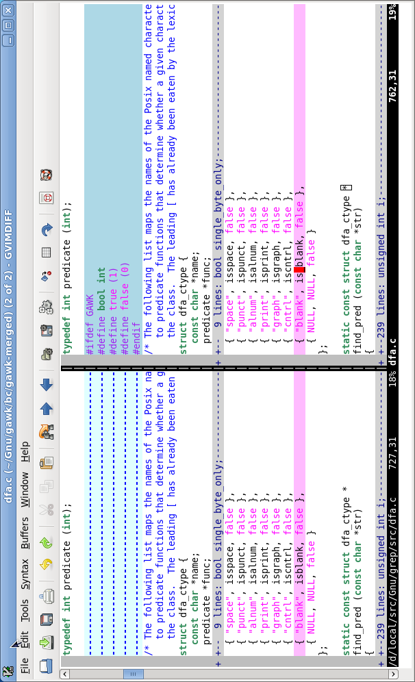

{% include JB/setup %}
{% raw %}
<div>
<div class="book" title="Vim—vi Improved"><div class="book"><div class="book"><div class="book"><h1 class="title1"><a id="viref2-ch-1-sect-12" class="calibre1"></a>Vim—vi Improved</h1></div></div></div><p class="copyright">Vim <a id="sec14vim"></a>is the most powerful and most popular of the
    <em class="calibre3">vi</em> clones currently in use. It is the default version
    of <em class="calibre3">vi</em> on most GNU/Linux systems.</p><div class="book" title="Important Command-Line Options"><div class="book"><div class="book"><div class="book"><h2 class="title2"><a id="viref2-ch-1-sect-12.1" class="calibre1"></a>Important Command-Line Options</h2></div></div></div><div class="book"><a id="I_indexterm1_d1e5682"></a><a id="I_indexterm1_d1e5687"></a><dl class="calibre7"><dt class="book"><span><code class="literal">-b</code></span></dt><dd class="calibre8"><p class="copyright">Start in binary mode.</p></dd></dl></div><div class="book"><dl class="calibre7"><dt class="book"><span><code class="literal">-c</code> <em class="calibre3"><code class="calibre9">command</code></em></span></dt><dd class="calibre8"><p class="copyright">Execute <span><em class="calibre3">command</em></span> at startup (POSIX
            version of the historical
            <code class="literal">+</code><span><em class="calibre3">command</em></span>).</p></dd></dl></div><div class="book"><dl class="calibre7"><dt class="book"><span><code class="literal">-C</code></span></dt><dd class="calibre8"><p class="copyright">Run in <em class="calibre3">vi</em> compatibility mode.</p></dd><dt class="book"><span><code class="literal">-f</code></span></dt><dd class="calibre8"><p class="copyright">For the GUI version, stay in the foreground.</p></dd><dt class="book"><span><code class="literal">-g</code></span></dt><dd class="calibre8"><p class="copyright">Start the GUI version of Vim, if Vim was compiled with
            support for the GUI.</p></dd></dl></div><div class="book"><dl class="calibre7"><dt class="book"><span><code class="literal">-i</code> <em class="calibre3"><code class="calibre9">viminfo</code></em></span></dt><dd class="calibre8"><p class="copyright">Read the given <span><em class="calibre3">viminfo</em></span> file for
            initialization instead of the default <span><em class="calibre3">viminfo</em></span>
            file.</p></dd><dt class="book"><span><code class="literal">-o</code>
          [<em class="calibre3"><code class="calibre9">N</code></em>]</span></dt><dd class="calibre8"><p class="copyright">Open <span><em class="calibre3">N</em></span> windows, if given; otherwise,
            open one window per file.</p></dd><dt class="book"><span><code class="literal">-O</code>
          [<em class="calibre3"><code class="calibre9">N</code></em>]</span></dt><dd class="calibre8"><p class="copyright">Like <code class="literal">-o</code>, but split the windows
            vertically.</p></dd></dl></div><div class="book"><dl class="calibre7"><dt class="book"><span><code class="literal">-n</code></span></dt><dd class="calibre8"><p class="copyright">Don’t create a swap file: recovery won’t be possible.</p></dd><dt class="book"><span><code class="literal">-p</code></span></dt><dd class="calibre8"><p class="copyright">Open a new tab for each file named on the command
            line.</p></dd></dl></div><div class="book"><dl class="calibre7"><dt class="book"><span><code class="literal">-q</code> <em class="calibre3"><code class="calibre9">filename</code></em></span></dt><dd class="calibre8"><p class="copyright">Treat <span><em class="calibre3">filename</em></span> as the “quick fix”
            file.</p></dd></dl></div><div class="book"><dl class="calibre7"><dt class="book"><span><code class="literal">-R</code></span></dt><dd class="calibre8"><p class="copyright">Start in read-only mode, setting the
            <code class="literal">readonly</code> option.</p></dd><dt class="book"><span><code class="literal">-s</code></span></dt><dd class="calibre8"><p class="copyright">Enter batch (script) mode. This is only for
            <em class="calibre3">ex</em> and intended for running editing scripts
            (POSIX version of the historical “–” argument).</p></dd></dl></div><div class="book"><dl class="calibre7"><dt class="book"><span><code class="literal">-u</code> <em class="calibre3"><code class="calibre9">vimrc</code></em></span></dt><dd class="calibre8"><p class="copyright">Read the given <em class="calibre3">.vimrc</em> file for
            initialization and skip all other normal initialization
            steps.</p></dd><dt class="book"><span><code class="literal">-U</code> <em class="calibre3"><code class="calibre9">gvimrc</code></em></span></dt><dd class="calibre8"><p class="copyright">Read the given <em class="calibre3">.gvimrc</em> file for GUI
            initialization and skip all other normal GUI initialization
            steps.</p></dd></dl></div><div class="book"><dl class="calibre7"><dt class="book"><span><code class="literal">-y</code></span></dt><dd class="calibre8"><p class="copyright">Enter “easy” mode, which provides more intuitive behavior
            for beginners.</p></dd><dt class="book"><span><code class="literal">-Z</code></span></dt><dd class="calibre8"><p class="copyright">Enter restricted mode (same as having a leading
            <code class="literal">r</code> in the name).</p></dd></dl></div></div><div class="book" title="Vim Window Management"><div class="book"><div class="book"><div class="book"><h2 class="title2"><a id="viref2-ch-1-sect-12.2" class="calibre1"></a>Vim Window Management</h2></div></div></div><p class="copyright">Vim <a id="sec14vimwindowmanagement"></a>lets <a id="I_indexterm1_d1e5898"></a>you split the screen into multiple windows and control
      their size and placement.</p><div class="book" title="Window management commands—ex"><div class="book"><div class="book"><div class="book"><h3 class="title3"><a id="viref2-ch-1-sect-12.2.1" class="calibre1"></a>Window management commands—ex</h3></div></div></div><div class="book"><a id="viref-ch-1-tab-34"></a><table class="calibre10"><colgroup class="calibre11"><col width="1.6in" class="calibre12"/><col width="1.6in" class="calibre12"/></colgroup><thead class="calibre13"><tr class="calibre14"><th class="calibre15"><p class="copyright">Command</p></th><th class="calibre16"><p class="copyright">Function</p></th></tr></thead><tbody class="calibre17"><tr class="calibre14"><td class="calibre18"><p class="copyright"><code class="literal1">clo</code>[<code class="literal1">se</code>][<code class="literal1">!</code>]</p></td><td class="calibre20"><p class="copyright">Close the current window; behavior affected by
                the <code class="literal1">hidden</code> <span>option</span></p></td></tr><tr class="calibre14"><td class="calibre18"><p class="copyright"><code class="literal1">hid</code>[<code class="literal1">e</code>]</p></td><td class="calibre20"><p class="copyright">Close the current window, if it’s not the last
                one on the screen</p></td></tr><tr class="calibre14"><td class="calibre18"><p class="copyright">[<em class="calibre3"><code class="calibre19">N</code></em>]<code class="literal1">new</code>
                [<em class="calibre3"><code class="calibre19">position</code></em>]
                [<em class="calibre3"><code class="calibre19">file</code></em>]</p></td><td class="calibre20"><p class="copyright">Create a new window, editing an empty
                buffer</p></td></tr><tr class="calibre14"><td class="calibre18"><p class="copyright"><code class="literal1">on</code>[<code class="literal1">ly</code>]</p></td><td class="calibre20"><p class="copyright">Make this window the only one on the
                screen</p></td></tr><tr class="calibre14"><td class="calibre18"><p class="copyright"><code class="literal1">qa</code>[<code class="literal1">ll</code>][<code class="literal1">!</code>]</p></td><td class="calibre20"><p class="copyright">Exit Vim</p></td></tr><tr class="calibre14"><td class="calibre18"><p class="copyright"><code class="literal1">q</code>[<code class="literal1">uit</code>][<code class="literal1">!</code>]</p></td><td class="calibre20"><p class="copyright">Quit the current window (exit if given in the
                last window)</p></td></tr><tr class="calibre14"><td class="calibre18"><p class="copyright"><code class="literal1">res</code>[<code class="literal1">ize</code>]
                [±<em class="calibre3"><code class="calibre19">n</code></em>]</p></td><td class="calibre20"><p class="copyright">Increase or decrease the current window height by
                <span><em class="calibre3">n</em></span></p></td></tr><tr class="calibre14"><td class="calibre18"><p class="copyright"><code class="literal1">res</code>[<code class="literal1">ize</code>]
                [<em class="calibre3"><code class="calibre19">n</code></em>]</p></td><td class="calibre20"><p class="copyright">Set the current window height to
                <span><em class="calibre3">n</em></span> if supplied; otherwise, set it to the
                largest size possible without hiding the other
                windows</p></td></tr><tr class="calibre14"><td class="calibre18"><p class="copyright">[<em class="calibre3"><code class="calibre19">N</code></em>]<code class="literal1">sn</code>[<code class="literal1">ext</code>]</p></td><td class="calibre20"><p class="copyright">Split the window and move to the next file in the
                argument list, or to the <span><em class="calibre3">N</em></span>th file if a
                count is <span>supplied</span></p></td></tr><tr class="calibre14"><td class="calibre18"><p class="copyright">[<em class="calibre3"><code class="calibre19">N</code></em>]<code class="literal1">sp</code>[<code class="literal1">lit</code>]
                [<em class="calibre3"><code class="calibre19">position</code></em>]
                [<em class="calibre3"><code class="calibre19">file</code></em>]</p></td><td class="calibre20"><p class="copyright">Split the current window in half</p></td></tr><tr class="calibre14"><td class="calibre18"><p class="copyright"><code class="literal1">sta</code>[<code class="literal1">g</code>]
                [<em class="calibre3"><code class="calibre19">tagname</code></em>]</p></td><td class="calibre20"><p class="copyright">Split the window and run the
                <code class="literal1">:tag</code> command as appropriate in the new
                window</p></td></tr><tr class="calibre14"><td class="calibre18"><p class="copyright">[<em class="calibre3"><code class="calibre19">N</code></em>]<code class="literal1">sv</code>[<code class="literal1">iew</code>]
                [<em class="calibre3"><code class="calibre19">position</code></em>]
                <em class="calibre3"><code class="calibre19">file</code></em></p></td><td class="calibre20"><p class="copyright">Same as <code class="literal1">:split</code>, but set the
                <code class="literal1">readonly</code> option for the
                buffer</p></td></tr><tr class="calibre14"><td class="calibre18"><p class="copyright"><code class="literal1">wa</code>[<code class="literal1">ll</code>][<code class="literal1">!</code>]</p></td><td class="calibre20"><p class="copyright">Write all modified buffers that have
                filenames</p></td></tr><tr class="calibre14"><td class="calibre18"><p class="copyright"><code class="literal1">wqa</code>[<code class="literal1">ll</code>][<code class="literal1">!</code>]</p></td><td class="calibre20"><p class="copyright">Write all changed buffers and <span>exit</span></p></td></tr><tr class="calibre14"><td class="calibre21"><p class="copyright"><code class="literal1">xa</code>[<code class="literal1">ll</code>][<code class="literal1">!</code>]</p></td><td class="calibre22"><p class="copyright">Same as <code class="literal1">wqall</code></p></td></tr></tbody></table></div></div><div class="book" title="Window management commands—vi"><div class="book"><div class="book"><div class="book"><h3 class="title3"><a id="viref2-ch-1-sect-12.2.2" class="calibre1"></a>Window management commands—vi</h3></div></div></div><div class="book"><a id="viref-ch-1-tab-35"></a><table class="calibre10"><colgroup class="calibre11"><col class="calibre12"/><col width="2.44in" class="calibre12"/></colgroup><thead class="calibre13"><tr class="calibre14"><th class="calibre15"><p class="copyright">Command</p></th><th class="calibre16"><p class="copyright">Function</p></th></tr></thead><tbody class="calibre17"><tr class="calibre23"><td class="calibre18"><p class="copyright"> </p><div class="book"><p class="copyright"><code class="literal1">^W s</code><br class="book"/>
<code class="literal1">^W S</code><br class="book"/>
<code class="literal1">^W ^S</code></p></div><p class="copyright"> </p></td><td class="calibre20"><p class="copyright">Same as <code class="literal1">:split</code> without a
                <span><em class="calibre3">file</em></span> argument; <code class="literal1">^W ^S</code>
                may not work on all terminals.</p></td></tr><tr class="calibre23"><td class="calibre18"><p class="copyright"> </p><div class="book"><p class="copyright"><code class="literal1">^W n</code><br class="book"/>
<code class="literal1">^W ^N</code></p></div><p class="copyright"> </p></td><td class="calibre20"><p class="copyright">Same as <code class="literal1">:new</code> without a
                <span><em class="calibre3">file</em></span> argument.</p></td></tr><tr class="calibre23"><td class="calibre18"><p class="copyright"> </p><div class="book"><p class="copyright"><code class="literal1">^W ^</code><br class="book"/>
<code class="literal1">^W ^^</code></p></div><p class="copyright"> </p></td><td class="calibre20"><p class="copyright">Perform <code class="literal1">:split #</code>, split the
                window, and edit the alternate file.</p></td></tr><tr class="calibre23"><td class="calibre18"><p class="copyright"> </p><div class="book"><p class="copyright"><code class="literal1">^W q</code><br class="book"/>
<code class="literal1">^W ^Q</code></p></div><p class="copyright"> </p></td><td class="calibre20"><p class="copyright">Same as the <code class="literal1">:quit</code> command;
                <code class="literal1">^W ^Q</code> may not work on all
                terminals.</p></td></tr><tr class="calibre23"><td class="calibre18"><code class="literal1">^W c</code></td><td class="calibre20"><p class="copyright">Same as the <code class="literal1">:close</code>
                command.</p></td></tr><tr class="calibre23"><td class="calibre18"><p class="copyright"> </p><div class="book"><p class="copyright"><code class="literal1">^W o</code><br class="book"/>
<code class="literal1">^W ^O</code></p></div><p class="copyright"> </p></td><td class="calibre20"><p class="copyright">Same as the <code class="literal1">:only</code>
                command.</p></td></tr><tr class="calibre23"><td class="calibre18"><p class="copyright"> </p><div class="book"><p class="copyright"><code class="literal1">^W</code> ↓<br class="book"/>
<code class="literal1">^W j</code><br class="book"/>
<code class="literal1">^W ^J</code></p></div><p class="copyright"> </p></td><td class="calibre20"><p class="copyright">Move cursor to <span><em class="calibre3">n</em></span>th window
                below the current one.</p></td></tr><tr class="calibre23"><td class="calibre18"><p class="copyright"> </p><div class="book"><p class="copyright"><code class="literal1">^W</code> ↑<br class="book"/>
<code class="literal1">^W k</code><br class="book"/>
<code class="literal1">^W ^K</code></p></div><p class="copyright"> </p></td><td class="calibre20"><p class="copyright">Move cursor to <span><em class="calibre3">n</em></span>th window
                above the current one.</p></td></tr><tr class="calibre23"><td class="calibre18"><p class="copyright"> </p><div class="book"><p class="copyright"><code class="literal1">^W w</code><br class="book"/>
<code class="literal1">^W ^W</code></p></div><p class="copyright"> </p></td><td class="calibre20"><p class="copyright">With <span><em class="calibre3">count</em></span>, go to
                <span><em class="calibre3">n</em></span>th window; otherwise, move to the window
                below the current one. If in the bottom window, move to the
                top one.</p></td></tr><tr class="calibre23"><td class="calibre18"><code class="literal1">^W W</code></td><td class="calibre20"><p class="copyright">With <span><em class="calibre3">count</em></span>, go to
                <span><em class="calibre3">n</em></span>th window; otherwise, move to window
                above the current one. If in the top window, move to the
                bottom one.</p></td></tr><tr class="calibre23"><td class="calibre18"><p class="copyright"> </p><div class="book"><p class="copyright"><code class="literal1">^W t</code><br class="book"/>
<code class="literal1">^W ^T</code></p></div><p class="copyright"> </p></td><td class="calibre20"><p class="copyright">Move the cursor to the top window.</p></td></tr><tr class="calibre23"><td class="calibre18"><p class="copyright"> </p><div class="book"><p class="copyright"><code class="literal1">^W b</code><br class="book"/>
<code class="literal1">^W ^B</code></p></div><p class="copyright"> </p></td><td class="calibre20"><p class="copyright">Move the cursor to the bottom
                window.</p></td></tr><tr class="calibre23"><td class="calibre18"><p class="copyright"> </p><div class="book"><p class="copyright"><code class="literal1">^W p</code><br class="book"/>
<code class="literal1">^W ^P</code></p></div><p class="copyright"> </p></td><td class="calibre20"><p class="copyright">Go to the most recently accessed (previous)
                <span>window</span>.</p></td></tr><tr class="calibre23"><td class="calibre18"><p class="copyright"> </p><div class="book"><p class="copyright"><code class="literal1">^W r</code><br class="book"/>
<code class="literal1">^W ^R</code></p></div><p class="copyright"> </p></td><td class="calibre20"><p class="copyright">Rotate all the windows downward; the cursor stays
                in the same window.</p></td></tr><tr class="calibre23"><td class="calibre18"><code class="literal1">^W R</code></td><td class="calibre20"><p class="copyright">Rotate all the windows upward; the cursor stays
                in the same window.</p></td></tr><tr class="calibre23"><td class="calibre18"><p class="copyright"> </p><div class="book"><p class="copyright"><code class="literal1">^W x</code><br class="book"/>
<code class="literal1">^W ^X</code></p></div><p class="copyright"> </p></td><td class="calibre20"><p class="copyright">Without <span><em class="calibre3">count</em></span>, exchange the
                current window with the next one; if there is no next window,
                exchange with the previous window. With
                <span><em class="calibre3">count</em></span>, exchange the current window with
                the <span><em class="calibre3">n</em></span>th window (first window is one; the
                cursor is put in the other window).</p></td></tr><tr class="calibre23"><td class="calibre18"><code class="literal1">^W =</code></td><td class="calibre20"><p class="copyright">Make all windows the same height.</p></td></tr><tr class="calibre23"><td class="calibre18"><code class="literal1">^W -</code></td><td class="calibre20"><p class="copyright">Decrease current window height.</p></td></tr><tr class="calibre23"><td class="calibre18"><code class="literal1">^W +</code></td><td class="calibre20"><p class="copyright">Increase current window height.</p></td></tr><tr class="calibre23"><td class="calibre18"><p class="copyright"> </p><div class="book"><p class="copyright"><code class="literal1">^W _</code><br class="book"/>
<code class="literal1">^W ^_</code></p></div><p class="copyright"> </p></td><td class="calibre20"><p class="copyright">Set the current window size to the value given in
                a preceding count.</p></td></tr><tr class="calibre23"><td class="calibre18"><code class="literal1">z</code> <em class="calibre3"><code class="calibre19">N</code></em>
                <span class="keycap">ENTER</span></td><td class="calibre20"><p class="copyright">Set the current window height to
                <span><em class="calibre3">N.</em></span></p></td></tr><tr class="calibre23"><td class="calibre18"><p class="copyright"> </p><div class="book"><p class="copyright"><code class="literal1">^W ]</code><br class="book"/>
<code class="literal1">^W ^]</code></p></div><p class="copyright"> </p></td><td class="calibre20"><p class="copyright">Split the current window; in the new upper
                window, use the identifier under the cursor as a tag and go to
                it.</p></td></tr><tr class="calibre23"><td class="calibre18"><p class="copyright"> </p><div class="book"><p class="copyright"><code class="literal1">^W f</code><br class="book"/>
<code class="literal1">^W ^F</code></p></div><p class="copyright"> </p></td><td class="calibre20"><p class="copyright">Split the current window and edit the filename
                under the cursor in the new window.</p></td></tr><tr class="calibre23"><td class="calibre18"><p class="copyright"> </p><div class="book"><p class="copyright"><code class="literal1">^W i</code><br class="book"/>
<code class="literal1">^W ^I</code></p></div><p class="copyright"> </p></td><td class="calibre20"><p class="copyright">Open a new window; move the cursor to the first
                line that matches the keyword under the cursor.</p></td></tr><tr class="calibre14"><td class="calibre21"><p class="copyright"> </p><div class="book"><p class="copyright"><code class="literal1">^W d</code><br class="book"/>
<code class="literal1">^W ^D</code></p></div><p class="copyright"> </p></td><td class="calibre22"><p class="copyright">Open a new window; move the cursor to the macro
                definition that contains the keyword under the <span>cursor</span>.<a id="I_indexterm1_d1e6587"></a></p></td></tr></tbody></table></div></div></div><div class="book" title="Tabbed Editing"><div class="book"><div class="book"><div class="book"><h2 class="title2"><a id="viref2-ch-1-sect-12.3" class="calibre1"></a>Tabbed Editing</h2></div></div></div><p class="copyright">Similar to <a id="sec14tabbedediting"></a>modern web browsers, <a id="sec14Vimtabbedediting"></a>Vim lets you create and manage multiple
      <em class="calibre3">tabs</em>. Within each tab, there can be multiple
      windows. You can then switch back and forth between tabs. This is an
      easy way to work on multiple unrelated editing tasks without cluttering
      up your screen. Tabs are supported in both the character and the GUI
      versions of Vim.</p><div class="book" title="Managing tabs—ex"><div class="book"><div class="book"><div class="book"><h3 class="title3"><a id="viref2-ch-1-sect-12.3.1" class="calibre1"></a>Managing tabs—ex</h3></div></div></div><p class="copyright">Tabs are numbered from one.</p><div class="book"><table class="calibre10"><colgroup class="calibre11"><col width="1.6in" class="calibre12"/><col width="1.6in" class="calibre12"/></colgroup><thead class="calibre13"><tr class="calibre14"><th class="calibre15"><p class="copyright">Command</p></th><th class="calibre16"><p class="copyright">Function</p></th></tr></thead><tbody class="calibre17"><tr class="calibre14"><td class="calibre18">[<em class="calibre3"><code class="calibre19">count</code></em>]
                <code class="literal1">tab</code>
                <em class="calibre3"><code class="calibre19">command</code></em></td><td class="calibre20"><p class="copyright"> Run <span><em class="calibre3">command</em></span>, but open a new
                tab when otherwise a new window would be opened, e.g., use
                <code class="literal1">:tab split</code> to split the current buffer into
                a new tab.</p></td></tr><tr class="calibre14"><td class="calibre18"><code class="literal1">tabc</code>[<code class="literal1">lose</code>][<code class="literal1">!</code>]
                [<em class="calibre3"><code class="calibre19">count</code></em>]</td><td class="calibre20"><p class="copyright"> Close the current tab page. With
                <span><em class="calibre3">count</em></span>, close the page whose number is
                indicated in <span><em class="calibre3">count</em></span>. Use
                <code class="literal1">!</code> to force closing, even if file contents
                have not been saved (the buffer’s contents are not
                lost).</p></td></tr><tr class="calibre14"><td class="calibre18"><code class="literal1">tabdo</code>
                <em class="calibre3"><code class="calibre19">command</code></em></td><td class="calibre20"><p class="copyright"> Execute <span><em class="calibre3">command</em></span> for each
                tab.</p></td></tr><tr class="calibre14"><td class="calibre18"><code class="literal1">tabe</code>[<code class="literal1">dit</code>]
                [<em class="calibre3"><code class="calibre19">option</code></em>]
                [<em class="calibre3"><code class="calibre19">command</code></em>]
                [<em class="calibre3"><code class="calibre19">file</code></em>]</td><td class="calibre20"><p class="copyright"> Open a new page with a window editing
                <span><em class="calibre3">file</em></span>. With no arguments, open an empty
                page.</p></td></tr><tr class="calibre14"><td class="calibre18"><code class="literal1">tabf</code>[<code class="literal1">ind</code>]
                [<em class="calibre3"><code class="calibre19">option</code></em>]
                [<em class="calibre3"><code class="calibre19">command</code></em>]
                <em class="calibre3"><code class="calibre19">file</code></em></td><td class="calibre20"><p class="copyright"> Open a new page and search for
                <span><em class="calibre3">file</em></span> in the value of the
                <code class="literal1">path</code> option, like
                <code class="literal1">:find</code>.</p></td></tr><tr class="calibre14"><td class="calibre18"><code class="literal1">tabf</code>[<code class="literal1">irst</code>]</td><td class="calibre20"><p class="copyright"> Move to the first tab. </p></td></tr><tr class="calibre14"><td class="calibre18"><code class="literal1">tabl</code>[<code class="literal1">ast</code>]</td><td class="calibre20"><p class="copyright"> Move to the last tab. </p></td></tr><tr class="calibre14"><td class="calibre18"><code class="literal1">tabm</code>[<code class="literal1">ove</code>]
                [<em class="calibre3"><code class="calibre19">N</code></em>]</td><td class="calibre20"><p class="copyright"> Move the current tab page to <span>after</span> tab page
                <span><em class="calibre3">N</em></span> (change the ordering of the tab pages
                themselves, not which tab you’re working in). With no
                argument, make the current tab become the last one.
                </p></td></tr><tr class="calibre14"><td class="calibre18"><code class="literal1">tabnew</code>
                [<em class="calibre3"><code class="calibre19">option</code></em>]
                [<em class="calibre3"><code class="calibre19">command</code></em>]
                [<em class="calibre3"><code class="calibre19">file</code></em>]</td><td class="calibre20"><p class="copyright"> Same as
                <code class="literal1">:tabedit</code>.</p></td></tr><tr class="calibre14"><td class="calibre18"><code class="literal1">tabn</code>[<code class="literal1">ext</code>]
                [<em class="calibre3"><code class="calibre19">count</code></em>]</td><td class="calibre20"><p class="copyright"> Move to next tab, or to tab
                <span><em class="calibre3">count</em></span>.</p></td></tr><tr class="calibre14"><td class="calibre18"><code class="literal1">tabN</code>[<code class="literal1">ext</code>]
                [<em class="calibre3"><code class="calibre19">count</code></em>]</td><td class="calibre20"><p class="copyright"> Same as
                <code class="literal1">:tabprevious</code>.</p></td></tr><tr class="calibre14"><td class="calibre18"><code class="literal1">tabo</code>[<code class="literal1">nly</code>][<code class="literal1">!</code>]</td><td class="calibre20"><p class="copyright"> Close all other tab pages. </p></td></tr><tr class="calibre14"><td class="calibre18"><code class="literal1">tabp</code>[<code class="literal1">revious</code>]
                [<em class="calibre3"><code class="calibre19">count</code></em>]</td><td class="calibre20"><p class="copyright"> Move to previous tab, or go back
                <span><em class="calibre3">count</em></span> tabs. This wraps around.
                </p></td></tr><tr class="calibre14"><td class="calibre21"><code class="literal1">tabr</code>[<code class="literal1">ewind</code>]</td><td class="calibre22"><p class="copyright"> Move to the first tab (same as
                <code class="literal1">:tabfirst</code>).</p></td></tr></tbody></table></div></div><div class="book" title="Managing tabs—vi"><div class="book"><div class="book"><div class="book"><h3 class="title3"><a id="viref2-ch-1-sect-12.3.2" class="calibre1"></a>Managing tabs—vi</h3></div></div></div><p class="copyright">The control sequences work in both command mode and insert
        mode.</p><div class="book"><table class="calibre10"><colgroup class="calibre11"><col class="calibre12"/><col width="2.44in" class="calibre12"/></colgroup><thead class="calibre13"><tr class="calibre14"><th class="calibre15"><p class="copyright">Command</p></th><th class="calibre16"><p class="copyright">Function</p></th></tr></thead><tbody class="calibre17"><tr class="calibre14"><td class="calibre18"><p class="copyright"> </p><div class="book"><p class="copyright"><code class="literal1">gt</code><br class="book"/>
<span class="keycap">CTRL</span> <span class="keycap">Page Down</span></p></div><p class="copyright">
                </p></td><td class="calibre20"><p class="copyright"> Same as <code class="literal1">:tabnext</code>
                </p></td></tr><tr class="calibre14"><td class="calibre18"><p class="copyright"> </p><div class="book"><p class="copyright"><code class="literal1">gT</code><br class="book"/>
<span class="keycap">CTRL</span> <span class="keycap">Page Up</span></p></div><p class="copyright"> </p></td><td class="calibre20"><p class="copyright"> Same as <code class="literal1">:tabprevious</code>
                </p></td></tr><tr class="calibre14"><td class="calibre18"><code class="literal1">^W gf</code></td><td class="calibre20"><p class="copyright"> Edit the filename under the cursor in a new tab
                page </p></td></tr><tr class="calibre14"><td class="calibre21"><code class="literal1">^W gF</code></td><td class="calibre22"><p class="copyright"> Edit the filename under the cursor in a new tab
                page, starting at the line number following the filename
                </p></td></tr></tbody></table></div></div><div class="book" title="Tabbed editing options"><div class="book"><div class="book"><div class="book"><h3 class="title3"><a id="viref2-ch-1-sect-12.3.3" class="calibre1"></a>Tabbed editing options</h3></div></div></div><div class="book"><table class="calibre10"><colgroup class="calibre11"><col class="calibre12"/><col width="1.5in" class="calibre12"/></colgroup><thead class="calibre13"><tr class="calibre14"><th class="calibre15"><p class="copyright">Option</p></th><th class="calibre16"><p class="copyright">Default</p></th></tr></thead><tbody class="calibre17"><tr class="calibre14"><td class="calibre18"><code class="literal1">t:cmdheight (t:ch)</code> (per tab
                page)</td><td class="calibre20"><p class="copyright">1</p></td></tr><tr class="calibre14"><td class="calibre18"><code class="literal1">guitablabel (gtl)</code></td><td class="calibre20"><p class="copyright"> </p></td></tr><tr class="calibre14"><td class="calibre18"><code class="literal1">guitabtooltip (gtt)</code></td><td class="calibre20"><p class="copyright"> </p></td></tr><tr class="calibre14"><td class="calibre18"><code class="literal1">showtabline (stal)</code></td><td class="calibre20"><p class="copyright">1</p></td></tr><tr class="calibre14"><td class="calibre18"><code class="literal1">tabline (tal)</code></td><td class="calibre20"><p class="copyright"> <a id="I_indexterm1_d1e7001"></a></p></td></tr><tr class="calibre14"><td class="calibre21"><code class="literal1">tabpagemax (tpm)</code></td><td class="calibre22"><p class="copyright">10<a id="I_indexterm1_d1e7010"></a></p></td></tr></tbody></table></div></div></div><div class="book" title="Vim Extended Regular Expressions"><div class="book"><div class="book"><div class="book"><h2 class="title2"><a id="viref2-ch-1-sect-12.4" class="calibre1"></a>Vim Extended Regular Expressions</h2></div></div></div><div class="book"><dl class="calibre7"><dt class="book"><span><code class="literal">\|</code></span></dt><dd class="calibre8"><p class="copyright">Indicates <a id="sec14Vimextendedregexpressions"></a><a id="sec14regexpressionsVimextensions"></a>alternation.</p></dd><dt class="book"><span><code class="literal">\+</code></span></dt><dd class="calibre8"><p class="copyright">Matches one or more of the preceding regular <span>expressions</span>.</p></dd><dt class="book"><span><code class="literal">\=</code></span></dt><dd class="calibre8"><p class="copyright">Matches zero or one of the preceding regular
            expressions.</p></dd></dl></div><div class="book"><dl class="calibre7"><dt class="book"><span><code class="literal">\{...}</code></span></dt><dd class="calibre8"><p class="copyright">Defines an <span><em class="calibre3">interval expression</em></span>.
            Interval expressions describe counted numbers of repetitions. In
            the following description, <span><em class="calibre3">n</em></span> and
            <span><em class="calibre3">m</em></span> represent integer constants:</p><div class="book"><dl class="calibre29"><dt class="book"><span><code class="literal">\{</code><em class="calibre3"><code class="calibre9">n</code></em><code class="literal">}</code></span></dt><dd class="calibre8"><p class="copyright">Matches exactly <span><em class="calibre3">n</em></span> repetitions of
                  the previous regular expression.</p></dd><dt class="book"><span><code class="literal">\{</code><em class="calibre3"><code class="calibre9">n</code></em><code class="literal">,}</code></span></dt><dd class="calibre8"><p class="copyright">Matches <span><em class="calibre3">n</em></span> or more repetitions of
                  the previous regular expression, as many as possible.</p></dd><dt class="book"><span><code class="literal">\{</code><em class="calibre3"><code class="calibre9">n</code></em><code class="literal">,</code><em class="calibre3"><code class="calibre9">m</code></em><code class="literal">}</code></span></dt><dd class="calibre8"><p class="copyright">Matches <span><em class="calibre3">n</em></span> to
                  <span><em class="calibre3">m</em></span> repetitions.</p></dd></dl></div><p class="copyright">For Vim, <span><em class="calibre3">n</em></span> and <span><em class="calibre3">m</em></span>
            can range from 0 to 32,000. Vim requires the backslash only on the
            <code class="literal">{</code> and not on the <code class="literal">}</code>. Vim
            extends traditional interval expressions with additional matching
            notations, as follows:</p><div class="book"><dl class="calibre29"><dt class="book"><span><code class="literal">\{,</code><em class="calibre3"><code class="calibre9">m</code></em><code class="literal">}</code></span></dt><dd class="calibre8"><p class="copyright">Matches 0 to <span><em class="calibre3">m</em></span> of the preceding
                  regular <span>expression</span>, as
                  much as possible.</p></dd><dt class="book"><span><code class="literal">\{}</code></span></dt><dd class="calibre8"><p class="copyright">Matches 0 or more of the preceding regular
                  expressions, as much as possible (same as
                  <code class="literal">*</code>).</p></dd><dt class="book"><span><code class="literal">\{-</code><em class="calibre3"><code class="calibre9">n</code></em><code class="literal">,</code><em class="calibre3"><code class="calibre9">m</code></em><code class="literal">}</code></span></dt><dd class="calibre8"><p class="copyright">Matches <span><em class="calibre3">n</em></span> to
                  <span><em class="calibre3">m</em></span> of the preceding regular expression,
                  as few as possible.</p></dd><dt class="book"><span><code class="literal">\{-</code><em class="calibre3"><code class="calibre9">n</code></em><code class="literal">}</code></span></dt><dd class="calibre8"><p class="copyright">Matches <span><em class="calibre3">n</em></span> of the preceding
                  regular <span>expression</span>.</p></dd><dt class="book"><span><code class="literal">\{-</code><em class="calibre3"><code class="calibre9">n</code></em><code class="literal">,}</code></span></dt><dd class="calibre8"><p class="copyright">Matches at least <span><em class="calibre3">n</em></span> of the
                  preceding regular expression, as few as possible.</p></dd><dt class="book"><span><code class="literal">\{-,</code><em class="calibre3"><code class="calibre9">m</code></em><code class="literal">}</code></span></dt><dd class="calibre8"><p class="copyright">Matches 0 to <span><em class="calibre3">m</em></span> of the preceding
                  regular <span>expression</span>, as
                  few as possible.</p></dd></dl></div></dd></dl></div><div class="book"><dl class="calibre7"><dt class="book"><span><code class="literal">\i</code></span></dt><dd class="calibre8"><p class="copyright">Matches any identifier character, as defined by the <code class="literal">isident</code> option.</p></dd><dt class="book"><span><code class="literal">\I</code></span></dt><dd class="calibre8"><p class="copyright">Like <code class="literal">\i</code>, excluding digits.</p></dd><dt class="book"><span><code class="literal">\k</code></span></dt><dd class="calibre8"><p class="copyright">Matches any keyword character, as defined by the <code class="literal">iskeyword</code> option.</p></dd><dt class="book"><span><code class="literal">\K</code></span></dt><dd class="calibre8"><p class="copyright">Like <code class="literal">\k</code>, excluding digits.</p></dd><dt class="book"><span><code class="literal">\f</code></span></dt><dd class="calibre8"><p class="copyright">Matches any filename character, as defined by the <code class="literal">isfname</code> option.</p></dd><dt class="book"><span><code class="literal">\F</code></span></dt><dd class="calibre8"><p class="copyright">Like <code class="literal">\f</code>, excluding digits.</p></dd><dt class="book"><span><code class="literal">\p</code></span></dt><dd class="calibre8"><p class="copyright">Matches any printable character, as defined by the <code class="literal">isprint</code> option.</p></dd><dt class="book"><span><code class="literal">\P</code></span></dt><dd class="calibre8"><p class="copyright">Like <code class="literal">\p</code>, excluding digits.</p></dd><dt class="book"><span><code class="literal">\s</code></span></dt><dd class="calibre8"><p class="copyright">Matches a whitespace character (exactly a space or
            tab).</p></dd><dt class="book"><span><code class="literal">\S</code></span></dt><dd class="calibre8"><p class="copyright">Matches anything that isn’t a space or a tab.</p></dd><dt class="book"><span><code class="literal">\b</code></span></dt><dd class="calibre8"><p class="copyright">Backspace.</p></dd><dt class="book"><span><code class="literal">\e</code></span></dt><dd class="calibre8"><p class="copyright">Escape.</p></dd><dt class="book"><span><code class="literal">\r</code></span></dt><dd class="calibre8"><p class="copyright">Carriage return.</p></dd><dt class="book"><span><code class="literal">\t</code></span></dt><dd class="calibre8"><p class="copyright">Tab.</p></dd><dt class="book"><span><code class="literal">\n</code></span></dt><dd class="calibre8"><p class="copyright">Matches the end of line.</p></dd><dt class="book"><span><code class="literal">~</code></span></dt><dd class="calibre8"><p class="copyright">Matches the last given substitute (i.e., replacement)
            string.</p></dd></dl></div><div class="book"><dl class="calibre7"><dt class="book"><span><code class="literal">\(...\)</code></span></dt><dd class="calibre8"><p class="copyright">Provides grouping for <code class="literal">*</code>,
            <code class="literal">\+</code>, and <code class="literal">\=</code>, as well as
            making matched subtexts available in the replacement part of a
            substitute command (<code class="literal">\1</code>, <code class="literal">\2</code>,
            etc.).</p></dd></dl></div><div class="book"><dl class="calibre7"><dt class="book"><span><code class="literal">\1</code></span></dt><dd class="calibre8"><p class="copyright">Matches the same string that was matched by the first
            subexpression in <code class="literal">\(</code> and <code class="literal">\)</code>.
            <code class="literal">\2</code>, <code class="literal">\3</code>, and so on, may be
            used to represent the second, third, and so forth <span>subexpressions</span>.</p></dd></dl></div><p class="copyright">The <code class="literal">isident</code>, <code class="literal">iskeyword</code>,
      <code class="literal">isfname</code>, and <code class="literal">isprint</code> options
      define the characters that appear in identifiers, keywords, and
      filenames, and that are printable, <a id="I_indexterm1_d1e7434"></a><a id="I_indexterm1_d1e7436"></a>respectively.</p></div><div class="book" title="Command-Line History and Completion"><div class="book"><div class="book"><div class="book"><h2 class="title2"><a id="viref2-ch-1-sect-12.5" class="calibre1"></a>Command-Line History and Completion</h2></div></div></div><p class="copyright">Vim <a id="I_indexterm1_d1e7444"></a>keeps a history of <em class="calibre3">ex</em> commands that you
      have issued. You can recall and edit commands from that history and use
      the completion facilities to save typing when entering commands.</p><div class="book" title="History commands—vi"><div class="book"><div class="book"><div class="book"><h3 class="title3"><a id="viref2-ch-1-sect-12.5.1" class="calibre1"></a>History commands—vi</h3></div></div></div><div class="book"><a id="viref-ch-1-tab-36"></a><table class="calibre10"><colgroup class="calibre11"><col class="calibre12"/><col width="2.01in" class="calibre12"/></colgroup><thead class="calibre13"><tr class="calibre14"><th class="calibre15"><p class="copyright">Key</p></th><th class="calibre16"><p class="copyright">Meaning</p></th></tr></thead><tbody class="calibre17"><tr class="calibre14"><td class="calibre18"><p class="copyright">↑, ↓</p></td><td class="calibre20"><p class="copyright">Move up (previous), down (more recent) in the
                history</p></td></tr><tr class="calibre14"><td class="calibre18"><p class="copyright"><span>←</span>, <span>→</span></p></td><td class="calibre20"><p class="copyright">Move left, right on the recalled
                line</p></td></tr><tr class="calibre14"><td class="calibre18"><p class="copyright"> <span class="keycap">INS</span> </p></td><td class="calibre20"><p class="copyright">Toggle insert/overstrike mode; default is insert
                mode</p></td></tr><tr class="calibre14"><td class="calibre18"><p class="copyright"> <span class="keycap">BACKSPACE</span> </p></td><td class="calibre20"><p class="copyright">Delete characters</p></td></tr><tr class="calibre14"><td class="calibre18"><p class="copyright"><span class="keycap">SHIFT</span> or
                <span class="keycap">CONTROL</span> combined with <span>←</span> or <span>→</span></p></td><td class="calibre20"><p class="copyright">Move left or right one word at a
                time</p></td></tr><tr class="calibre14"><td class="calibre18"><p class="copyright"><code class="literal1">^B</code> or
                <span class="keycap">HOME</span></p></td><td class="calibre20"><p class="copyright">Move to the beginning of the command
                line</p></td></tr><tr class="calibre14"><td class="calibre21"><p class="copyright"><code class="literal1">^E</code> or
                <span class="keycap">END</span></p></td><td class="calibre22"><p class="copyright">Move to the end of the command
                line</p></td></tr></tbody></table></div><p class="copyright">If Vim is in <em class="calibre3">vi</em> compatibility mode,
        <span class="keycap">ESC</span> acts likes <span class="keycap">ENTER</span> and executes
        the command. When <em class="calibre3">vi</em> compatibility is turned off,
        <span class="keycap">ESC</span> exits the command line without executing
        anything.</p><p class="copyright">The <code class="literal">wildchar</code> option contains the character
        you type when you want Vim to do a completion. The default value is
        the tab character. You can use completion for the following:</p><div class="book"><dl class="calibre7"><dt class="book"><span><span><em class="calibre3">Command names</em></span></span></dt><dd class="calibre8"><p class="copyright">Available at the start of the command line.</p></dd><dt class="book"><span><span><em class="calibre3">Tag values</em></span></span></dt><dd class="calibre8"><p class="copyright">After you’ve typed <code class="literal">:tag</code>.</p></dd><dt class="book"><span><span><em class="calibre3">Filenames</em></span></span></dt><dd class="calibre8"><p class="copyright">When typing a command that takes a filename argument (see
              <code class="literal">:help suffixes</code> for details).</p></dd><dt class="book"><span><span><em class="calibre3">Option values</em></span></span></dt><dd class="calibre8"><p class="copyright">When entering a <code class="literal">:set</code> command, for both
              option names and their values.</p></dd></dl></div></div><div class="book" title="Completion commands—vi"><div class="book"><div class="book"><div class="book"><h3 class="title3"><a id="viref2-ch-1-sect-12.5.2" class="calibre1"></a>Completion commands—vi</h3></div></div></div><a id="I_indexterm1_d1e7611"></a><div class="book"><a id="viref-ch-1-tab-37"></a><table class="calibre10"><colgroup class="calibre11"><col class="calibre12"/><col width="2.14in" class="calibre12"/></colgroup><thead class="calibre13"><tr class="calibre14"><th class="calibre15"><p class="copyright">Command</p></th><th class="calibre16"><p class="copyright">Function</p></th></tr></thead><tbody class="calibre17"><tr class="calibre14"><td class="calibre18"><p class="copyright"> <code class="literal1">^A</code> <a id="I_indexterm1_d1e7636"></a></p></td><td class="calibre20"><p class="copyright">Insert all names that match the
                pattern</p></td></tr><tr class="calibre14"><td class="calibre18"><p class="copyright"> <code class="literal1">^D</code> </p></td><td class="calibre20"><p class="copyright">List the names that match the pattern; for
                <span>filenames</span>, directories
                are highlighted</p></td></tr><tr class="calibre14"><td class="calibre18"><p class="copyright"> <code class="literal1">^L</code> </p></td><td class="calibre20"><p class="copyright">If there is exactly one match, insert it;
                otherwise, expand to the longest common prefix of the multiple
                matches</p></td></tr><tr class="calibre14"><td class="calibre18"><p class="copyright"> <code class="literal1">^N</code> </p></td><td class="calibre20"><p class="copyright">Go to next of multiple
                <code class="literal1">wildchar</code> matches, if any; otherwise, recall
                more recent history line</p></td></tr><tr class="calibre14"><td class="calibre18"><p class="copyright"> <code class="literal1">^P</code> </p></td><td class="calibre20"><p class="copyright">Go to previous of multiple
                <code class="literal1">wildchar</code> matches, if any; otherwise, recall
                older history line</p></td></tr><tr class="calibre14"><td class="calibre21"><p class="copyright">Value of
                <code class="literal1">wildchar</code></p></td><td class="calibre22"><p class="copyright">(Default: tab) Perform a match, inserting the
                generated text; pressing <span class="keycap">TAB</span> successively
                cycles among all the matches</p></td></tr></tbody></table></div></div></div><div class="book" title="Tag Stacks"><div class="book"><div class="book"><div class="book"><h2 class="title2"><a id="viref2-ch-1-sect-12.6" class="calibre1"></a>Tag Stacks</h2></div></div></div><p class="copyright">Vim <a id="I_indexterm1_d1e7710"></a><a id="I_indexterm1_d1e7715"></a>provides <em class="calibre3">ex</em> and <em class="calibre3">vi</em>
      commands for managing the tag stack.</p><div class="book" title="Tag commands—ex"><div class="book"><div class="book"><div class="book"><h3 class="title3"><a id="viref2-ch-1-sect-12.6.1" class="calibre1"></a>Tag commands—ex</h3></div></div></div><div class="book"><a id="viref-ch-1-tab-38"></a><table class="calibre10"><colgroup class="calibre11"><col width="1.5in" class="calibre12"/><col width="1.6in" class="calibre12"/></colgroup><thead class="calibre13"><tr class="calibre14"><th class="calibre15"><p class="copyright">Command</p></th><th class="calibre16"><p class="copyright">Function</p></th></tr></thead><tbody class="calibre17"><tr class="calibre14"><td class="calibre18"><p class="copyright">[<em class="calibre3"><code class="calibre19">count</code></em>]<code class="literal1">po</code>[<code class="literal1">p</code>][<code class="literal1">!</code>]</p></td><td class="calibre20"><p class="copyright">Pop a cursor position off the stack, restoring
                the cursor to its previous position</p></td></tr><tr class="calibre14"><td class="calibre18"><p class="copyright"><code class="literal1">sts</code>[<code class="literal1">elect</code>][<code class="literal1">!</code>]
                [<em class="calibre3"><code class="calibre19">tagstring</code></em>]</p></td><td class="calibre20"><p class="copyright">Like <code class="literal1">tselect</code>, but split the
                window for the selected tag</p></td></tr><tr class="calibre14"><td class="calibre18"><p class="copyright"><code class="literal1">ta</code>[<code class="literal1">g</code>][<code class="literal1">!</code>]
                [<em class="calibre3"><code class="calibre19">tagstring</code></em>]</p></td><td class="calibre20"><p class="copyright">Edit the file containing
                <span><em class="calibre3">tagstring</em></span> as defined in the
                <em class="calibre3">tags</em> file</p></td></tr><tr class="calibre14"><td class="calibre18"><p class="copyright">[<em class="calibre3"><code class="calibre19">N</code></em>]<code class="literal1">ta</code>[<code class="literal1">g</code>][<code class="literal1">!</code>]</p></td><td class="calibre20"><p class="copyright">Jump to the <span><em class="calibre3">N</em></span>th newer entry
                in the tag stack</p></td></tr><tr class="calibre14"><td class="calibre18"><p class="copyright"> <code class="literal1">tags</code> </p></td><td class="calibre20"><p class="copyright">Display the contents of the tag
                stack</p></td></tr><tr class="calibre14"><td class="calibre18"><p class="copyright"><code class="literal1">tl</code>[<code class="literal1">ast</code>][<code class="literal1">!</code>]</p></td><td class="calibre20"><p class="copyright">Jump to the last matching tag</p></td></tr><tr class="calibre14"><td class="calibre18"><p class="copyright">[<em class="calibre3"><code class="calibre19">N</code></em>]<code class="literal1">tn</code>[<code class="literal1">ext</code>][<code class="literal1">!</code>]</p></td><td class="calibre20"><p class="copyright">Jump to the <span><em class="calibre3">N</em></span>th next
                matching tag (default one)</p></td></tr><tr class="calibre14"><td class="calibre18"><p class="copyright">[<em class="calibre3"><code class="calibre19">N</code></em>]<code class="literal1">tN</code>[<code class="literal1">ext</code>][<code class="literal1">!</code>]</p></td><td class="calibre20"><p class="copyright">Same as
                <code class="literal1">tprevious</code></p></td></tr><tr class="calibre14"><td class="calibre18"><p class="copyright">[<em class="calibre3"><code class="calibre19">N</code></em>]<code class="literal1">tp</code>[<code class="literal1">revious</code>][<code class="literal1">!</code>]</p></td><td class="calibre20"><p class="copyright">Jump to the <span><em class="calibre3">N</em></span>th previous
                matching tag (default one)</p></td></tr><tr class="calibre14"><td class="calibre18"><p class="copyright">[<em class="calibre3"><code class="calibre19">N</code></em>]<code class="literal1">tr</code>[<code class="literal1">ewind</code>][<code class="literal1">!</code>]</p></td><td class="calibre20"><p class="copyright">Jump to the first matching tag; with
                <span><em class="calibre3">N</em></span>, jump to the <span><em class="calibre3">N</em></span>th
                matching tag</p></td></tr><tr class="calibre14"><td class="calibre21"><p class="copyright"><code class="literal1">ts</code>[<code class="literal1">elect</code>][<code class="literal1">!</code>]
                [<em class="calibre3"><code class="calibre19">tagstring</code></em>]</p></td><td class="calibre22"><p class="copyright">List the tags that match
                <span><em class="calibre3">tagstring</em></span>, using the information in the
                tags file(s)</p></td></tr></tbody></table></div></div><div class="book" title="Tag commands—vi"><div class="book"><div class="book"><div class="book"><h3 class="title3"><a id="viref2-ch-1-sect-12.6.2" class="calibre1"></a>Tag commands—vi</h3></div></div></div><div class="book"><a id="viref-ch-1-tab-39"></a><table class="calibre10"><colgroup class="calibre11"><col width="1.3in" class="calibre12"/><col width="1.8in" class="calibre12"/></colgroup><thead class="calibre13"><tr class="calibre14"><th class="calibre15"><p class="copyright">Command</p></th><th class="calibre16"><p class="copyright">Function</p></th></tr></thead><tbody class="calibre17"><tr class="calibre14"><td class="calibre18"><p class="copyright"> </p><div class="book"><p class="copyright"><code class="literal1">^]</code><br class="book"/>
<code class="literal1">g &lt;LeftMouse&gt;</code><br class="book"/>
<code class="literal1">CTRL-&lt;LeftMouse&gt;</code></p></div><p class="copyright"> </p></td><td class="calibre20"><p class="copyright">Look up the location of the identifier under the
                cursor in the <em class="calibre3">tags</em> file and move to that
                location; the current location is automatically pushed to the
                tag stack</p></td></tr><tr class="calibre14"><td class="calibre21"><p class="copyright"> <code class="literal1">^T</code> </p></td><td class="calibre22"><p class="copyright">Return to the previous location in the tag stack,
                i.e., pop off one element</p></td></tr></tbody></table></div></div></div><div class="book" title="Edit-Compile Speedup"><div class="book"><div class="book"><div class="book"><h2 class="title2"><a id="viref2-ch-1-sect-12.7" class="calibre1"></a>Edit-Compile Speedup</h2></div></div></div><p class="copyright">Vim <a id="I_indexterm1_d1e8019"></a>provides several commands to increase programmer <span>productivity</span>.</p><div class="book" title="Program development commands—ex"><div class="book"><div class="book"><div class="book"><h3 class="title3"><a id="viref2-ch-1-sect-12.7.1" class="calibre1"></a>Program development commands—ex</h3></div></div></div><div class="book"><a id="viref-ch-1-tab-40"></a><table class="calibre10"><colgroup class="calibre11"><col width="1.3in" class="calibre12"/><col width="1.9in" class="calibre12"/></colgroup><thead class="calibre13"><tr class="calibre14"><th class="calibre15"><p class="copyright">Command</p></th><th class="calibre16"><p class="copyright">Function</p></th></tr></thead><tbody class="calibre17"><tr class="calibre14"><td class="calibre18"><p class="copyright"><code class="literal1">cc</code>[<code class="literal1">!</code>]
                [<em class="calibre3"><code class="calibre19">n</code></em>]</p></td><td class="calibre20"><p class="copyright">Display error <span><em class="calibre3">n</em></span> if supplied;
                otherwise, redisplay the current error</p></td></tr><tr class="calibre14"><td class="calibre18"><p class="copyright"><code class="literal1">cf</code>[<code class="literal1">ile</code>][<code class="literal1">!</code>]
                [<em class="calibre3"><code class="calibre19">errorfile</code></em>]</p></td><td class="calibre20"><p class="copyright">Read the error file and jump to the first
                error</p></td></tr><tr class="calibre14"><td class="calibre18"><p class="copyright"><code class="literal1">clast</code>[<code class="literal1">!</code>]
                [<em class="calibre3"><code class="calibre19">n</code></em>]</p></td><td class="calibre20"><p class="copyright">Display error <span><em class="calibre3">n</em></span> if supplied;
                otherwise, display the last error</p></td></tr><tr class="calibre14"><td class="calibre18"><p class="copyright"><code class="literal1">cl</code>[<code class="literal1">ist</code>][<code class="literal1">!</code>]</p></td><td class="calibre20"><p class="copyright">List the errors that include a
                filename</p></td></tr><tr class="calibre14"><td class="calibre18"><p class="copyright">[<em class="calibre3"><code class="calibre19">N</code></em>]<code class="literal1">cn</code>[<code class="literal1">ext</code>][<code class="literal1">!</code>]</p></td><td class="calibre20"><p class="copyright">Display the <span><em class="calibre3">N</em></span>th next error
                that includes a filename</p></td></tr><tr class="calibre14"><td class="calibre18"><p class="copyright">[<em class="calibre3"><code class="calibre19">N</code></em>]<code class="literal1">cp</code>[<code class="literal1">previous</code>][<code class="literal1">!</code>]</p></td><td class="calibre20"><p class="copyright">Display the <span><em class="calibre3">N</em></span>th previous
                error that includes a filename</p></td></tr><tr class="calibre14"><td class="calibre18"><p class="copyright"><code class="literal1">crewind</code>[<code class="literal1">!</code>]
                [<em class="calibre3"><code class="calibre19">n</code></em>]</p></td><td class="calibre20"><p class="copyright">Display error <span><em class="calibre3">n</em></span> if
                supplied</p></td></tr><tr class="calibre14"><td class="calibre18"><p class="copyright"><code class="literal1">cq</code>[<code class="literal1">uit</code>]</p></td><td class="calibre20"><p class="copyright">Quit with an error code so that the compiler
                won’t compile the same file again; intended primarily for the
                Amiga <span>compiler</span></p></td></tr><tr class="calibre14"><td class="calibre21"><p class="copyright"><code class="literal1">mak</code>[<code class="literal1">e</code>]
                [<em class="calibre3"><code class="calibre19">arguments</code></em>]</p></td><td class="calibre22"><p class="copyright">Run <em class="calibre3">make</em>, based on the
                settings of several options as described in the next table,
                then go to the location of the first error</p></td></tr></tbody></table></div></div><div class="book" title="Program development options"><div class="book"><div class="book"><div class="book"><h3 class="title3"><a id="viref2-ch-1-sect-12.7.2" class="calibre1"></a>Program development options</h3></div></div></div><div class="book"><a id="viref-ch-1-tab-41"></a><table class="calibre10"><colgroup class="calibre11"><col class="calibre12"/><col class="calibre12"/><col class="calibre12"/></colgroup><thead class="calibre13"><tr class="calibre14"><th class="calibre15"><p class="copyright">Option</p></th><th class="calibre15"><p class="copyright">Value</p></th><th class="calibre16"><p class="copyright">Function</p></th></tr></thead><tbody class="calibre17"><tr class="calibre14"><td class="calibre18"><p class="copyright"><code class="literal1">errorformat</code> </p></td><td class="calibre18"><p class="copyright"> <code class="literal1">%f:%l:\ %m</code> </p></td><td class="calibre20"><p class="copyright">A description of what error messages from the
                compiler look like; this example value is for
                <em class="calibre3">gcc</em>, the C compiler from the GNU Compiler
                Collection</p></td></tr><tr class="calibre14"><td class="calibre18"><p class="copyright"> <code class="literal1">makeef</code> </p></td><td class="calibre18"><p class="copyright"> <code class="literal1">/tmp/vim##.err</code> </p></td><td class="calibre20"><p class="copyright">The name of a file that will contain the compiler
                output; the <code class="literal1">##</code> causes Vim to create unique
                <span>filenames</span></p></td></tr><tr class="calibre14"><td class="calibre18"><p class="copyright"> <code class="literal1">makeprg</code> </p></td><td class="calibre18"><p class="copyright"> <code class="literal1">make</code> </p></td><td class="calibre20"><p class="copyright">The program that handles the <span>recompilation</span></p></td></tr><tr class="calibre14"><td class="calibre18"><p class="copyright"> <code class="literal1">shell</code> </p></td><td class="calibre18"><p class="copyright"> <code class="literal1">/bin/sh</code> </p></td><td class="calibre20"><p class="copyright">The shell to execute the command for rebuilding
                your program</p></td></tr><tr class="calibre14"><td class="calibre21"><p class="copyright"> <code class="literal1">shellpipe</code> </p></td><td class="calibre21"><p class="copyright"> <code class="literal1">2&gt;&amp;1| tee</code>
                </p></td><td class="calibre22"><p class="copyright">Whatever is needed to cause the shell to save
                both standard output and standard error from the compilation
                in the error file</p></td></tr></tbody></table></div></div></div><div class="book" title="Programming Assistance"><div class="book"><div class="book"><div class="book"><h2 class="title2"><a id="viref2-ch-1-sect-12.8" class="calibre1"></a>Programming Assistance</h2></div></div></div><p class="copyright">Vim <a id="sec14Vimprogrammingassistance"></a>provides multiple mechanisms for finding identifiers that
      are of interest.</p><div class="book" title="Identifier search commands—ex"><div class="book"><div class="book"><div class="book"><h3 class="title3"><a id="viref2-ch-1-sect-12.8.1" class="calibre1"></a>Identifier search commands—ex</h3></div></div></div><a id="I_indexterm1_d1e8334"></a><div class="book"><a id="viref-ch-1-tab-44"></a><table class="calibre10"><colgroup class="calibre11"><col width="1.4in" class="calibre12"/><col width="1.7in" class="calibre12"/></colgroup><thead class="calibre13"><tr class="calibre14"><th class="calibre15"><p class="copyright">Command</p></th><th class="calibre16"><p class="copyright">Function</p></th></tr></thead><tbody class="calibre17"><tr class="calibre14"><td class="calibre18"><p class="copyright"><code class="literal1">che</code>[<code class="literal1">ckpath</code>][<code class="literal1">!</code>]</p></td><td class="calibre20"><p class="copyright">List all the included files that couldn’t be
                found; with the <code class="literal1">!</code>, list all the included
                files.</p></td></tr><tr class="calibre14"><td class="calibre18"><p class="copyright">[<em class="calibre3"><code class="calibre19">range</code></em>]<code class="literal1">dj</code>[<code class="literal1">ump</code>][<code class="literal1">!</code>]
                [<em class="calibre3"><code class="calibre19">count</code></em>]
                [<code class="literal1">/</code>]<em class="calibre3"><code class="calibre19">pattern</code></em>[<code class="literal1">/</code>]</p></td><td class="calibre20"><p class="copyright">Like <code class="literal1">[ ^D</code> and <code class="literal1">]
                ^D</code>, but search in <span><em class="calibre3">range</em></span> lines;
                the default is the whole file.</p></td></tr><tr class="calibre14"><td class="calibre18"><p class="copyright"> </p><div class="book"><p class="copyright">[<em class="calibre3"><code class="calibre19">range</code></em>]<code class="literal1">dl</code>[<code class="literal1">ist</code>][<code class="literal1">!</code>]<br class="book"/>
[<code class="literal1">/</code>]<em class="calibre3"><code class="calibre19">pattern</code></em>[<code class="literal1">/</code>]</p></div><p class="copyright">
                </p></td><td class="calibre20"><p class="copyright">Like <code class="literal1">[D</code> and
                <code class="literal1">]D</code>, but search in
                <span><em class="calibre3">range</em></span> lines; the default is the whole
                file.</p></td></tr><tr class="calibre14"><td class="calibre18"><p class="copyright">
                [<em class="calibre3"><code class="calibre19">range</code></em>]<code class="literal1">ds</code>[<code class="literal1">earch</code>][<code class="literal1">!</code>]
                [<em class="calibre3"><code class="calibre19">count</code></em>]
                [<code class="literal1">/</code>]<em class="calibre3"><code class="calibre19">pattern</code></em>[<code class="literal1">/</code>]
                </p></td><td class="calibre20"><p class="copyright">Like <code class="literal1">[d</code> and
                <code class="literal1">]d</code>, but search in
                <span><em class="calibre3">range</em></span> lines; the default is the whole
                file.</p></td></tr><tr class="calibre14"><td class="calibre18"><p class="copyright">[<em class="calibre3"><code class="calibre19">range</code></em>]<code class="literal1">dsp</code>[<code class="literal1">lit</code>][<code class="literal1">!</code>]
                [<em class="calibre3"><code class="calibre19">count</code></em>]
                [<code class="literal1">/</code>]<em class="calibre3"><code class="calibre19">pattern</code></em>[<code class="literal1">/</code>]</p></td><td class="calibre20"><p class="copyright">Like <code class="literal1">^W d</code> and <code class="literal1">^W
                ^D</code>, but search in <span><em class="calibre3">range</em></span> lines;
                the default is the whole file.</p></td></tr><tr class="calibre14"><td class="calibre18"><p class="copyright">[<em class="calibre3"><code class="calibre19">range</code></em>]<code class="literal1">ij</code>[<code class="literal1">ump</code>][<code class="literal1">!</code>]
                [<em class="calibre3"><code class="calibre19">count</code></em>]
                [<code class="literal1">/</code>]<em class="calibre3"><code class="calibre19">pattern</code></em>[<code class="literal1">/</code>]</p></td><td class="calibre20"><p class="copyright">Like <code class="literal1">[ ^I</code> and <code class="literal1">]
                ^I</code>, but search in <span><em class="calibre3">range</em></span> lines;
                the default is the whole file.</p></td></tr><tr class="calibre14"><td class="calibre18"><p class="copyright"> </p><div class="book"><p class="copyright">[<em class="calibre3"><code class="calibre19">range</code></em>]<code class="literal1">il</code>[<code class="literal1">ist</code>][<code class="literal1">!</code>]<br class="book"/>
[<code class="literal1">/</code>]<em class="calibre3"><code class="calibre19">pattern</code></em>[<code class="literal1">/</code>]</p></div></td><td class="calibre20"><p class="copyright">Like <code class="literal1">[I</code> and
                <code class="literal1">]I</code>, but search in
                <span><em class="calibre3">range</em></span> lines; the default is the whole
                file.</p></td></tr><tr class="calibre14"><td class="calibre18"><p class="copyright">
                [<em class="calibre3"><code class="calibre19">range</code></em>]<code class="literal1">is</code>[<code class="literal1">earch</code>][<code class="literal1">!</code>]
                [<em class="calibre3"><code class="calibre19">count</code></em>]
                [<code class="literal1">/</code>]<em class="calibre3"><code class="calibre19">pattern</code></em>[<code class="literal1">/</code>]
                </p></td><td class="calibre20"><p class="copyright">Like <code class="literal1">[i</code> and
                <code class="literal1">]i</code>, but search in
                <span><em class="calibre3">range</em></span> lines (the default is the whole
                file). Without the slashes, a word search is done; with
                slashes, a regular expression search is done.</p></td></tr><tr class="calibre14"><td class="calibre21"><p class="copyright">[<em class="calibre3"><code class="calibre19">range</code></em>]<code class="literal1">isp</code>[<code class="literal1">lit</code>][<code class="literal1">!</code>]
                [<em class="calibre3"><code class="calibre19">count</code></em>]
                [<code class="literal1">/</code>]<em class="calibre3"><code class="calibre19">pattern</code></em>[<code class="literal1">/</code>]</p></td><td class="calibre22"><p class="copyright">Like <code class="literal1">^W i</code> and <code class="literal1">^W
                ^I</code>, but search in <span><em class="calibre3">range</em></span> lines;
                the default is the whole file.</p></td></tr></tbody></table></div></div><div class="book" title="Identifier search commands—vi"><div class="book"><div class="book"><div class="book"><h3 class="title3"><a id="viref2-ch-1-sect-12.8.2" class="calibre1"></a>Identifier search commands—vi</h3></div></div></div><div class="book"><a id="viref-ch-1-tab-43"></a><table class="calibre10"><colgroup class="calibre11"><col class="calibre12"/><col width="2.65in" class="calibre12"/></colgroup><thead class="calibre13"><tr class="calibre14"><th class="calibre15"><p class="copyright">Command</p></th><th class="calibre16"><p class="copyright">Function</p></th></tr></thead><tbody class="calibre17"><tr class="calibre14"><td class="calibre18"><p class="copyright"> <code class="literal1">[d</code> </p></td><td class="calibre20"><p class="copyright">Display the first macro definition for the
                identifier under the cursor</p></td></tr><tr class="calibre14"><td class="calibre18"><p class="copyright"> <code class="literal1">]d</code> </p></td><td class="calibre20"><p class="copyright">Display the first macro definition for the
                identifier under the cursor, but start the search from the
                current position</p></td></tr><tr class="calibre14"><td class="calibre18"><p class="copyright"> <code class="literal1">[D</code> </p></td><td class="calibre20"><p class="copyright">Display all macro definitions for the identifier
                under the cursor; filenames and line numbers are
                displayed</p></td></tr><tr class="calibre14"><td class="calibre18"><p class="copyright"> <code class="literal1">]D</code> </p></td><td class="calibre20"><p class="copyright">Display all macro definitions for the identifier
                under the cursor, but start the search from the current
                position</p></td></tr><tr class="calibre14"><td class="calibre18"><p class="copyright"> <code class="literal1">[ ^D</code> </p></td><td class="calibre20"><p class="copyright">Jump to the first macro definition for the
                identifier under the cursor</p></td></tr><tr class="calibre14"><td class="calibre18"><p class="copyright"> <code class="literal1">] ^D</code> </p></td><td class="calibre20"><p class="copyright">Jump to the first macro definition for the
                identifier under the cursor, but start the search from the
                current position</p></td></tr><tr class="calibre14"><td class="calibre18"><p class="copyright"> </p><div class="book"><p class="copyright"><code class="literal1">^W d</code><br class="book"/>
<code class="literal1">^W ^D</code></p></div><p class="copyright"> </p></td><td class="calibre20"><p class="copyright">Open a new window showing the location of the
                first macro definition of the identifier under the cursor;
                with a preceding count, find the specified occurrence of the
                macro</p></td></tr><tr class="calibre14"><td class="calibre18"><p class="copyright"> <code class="literal1">[i</code> </p></td><td class="calibre20"><p class="copyright">Display the first line that contains the keyword
                under the cursor</p></td></tr><tr class="calibre14"><td class="calibre18"><p class="copyright"> <code class="literal1">]i</code> </p></td><td class="calibre20"><p class="copyright">Display the first line that contains the keyword
                under the cursor, but start the search at the current position
                in the file; this command is most effective when given a
                count</p></td></tr><tr class="calibre14"><td class="calibre18"><p class="copyright"> <code class="literal1">[I</code> </p></td><td class="calibre20"><p class="copyright">Display all lines that contain the keyword under
                the cursor; filenames and line numbers are
                displayed</p></td></tr><tr class="calibre14"><td class="calibre18"><p class="copyright"> <code class="literal1">]I</code> </p></td><td class="calibre20"><p class="copyright">Display all lines that contain the keyword under
                the cursor, but start from the current position in the
                file</p></td></tr><tr class="calibre14"><td class="calibre18"><p class="copyright"> <code class="literal1">[ ^I</code> </p></td><td class="calibre20"><p class="copyright">Jump to the first occurrence of the keyword under
                the cursor</p></td></tr><tr class="calibre14"><td class="calibre18"><p class="copyright"> <code class="literal1">] ^I</code> </p></td><td class="calibre20"><p class="copyright">Jump to the first occurrence of the keyword under
                the cursor, but start the search from the current
                position</p></td></tr><tr class="calibre14"><td class="calibre21"><p class="copyright"> </p><div class="book"><p class="copyright"><code class="literal1">^W i</code><br class="book"/>
<code class="literal1">^W ^I</code></p></div><p class="copyright"> </p></td><td class="calibre22"><p class="copyright">Open a new window showing the location of the
                first occurrence of the identifier under the cursor; with a
                preceding count, go to the specified occurrence</p></td></tr></tbody></table></div></div><div class="book" title="Extended matching commands—vi"><div class="book"><div class="book"><div class="book"><h3 class="title3"><a id="viref2-ch-1-sect-12.8.3" class="calibre1"></a>Extended matching commands—vi</h3></div></div></div><p class="copyright">Provide <a id="I_indexterm1_d1e8870"></a>a preceding count to these commands to move forward or
        backward by more than one instance of the desired search text.</p><div class="book"><a id="viref-ch-1-tab-45"></a><table class="calibre10"><colgroup class="calibre11"><col class="calibre12"/><col width="2.63in" class="calibre12"/></colgroup><thead class="calibre13"><tr class="calibre14"><th class="calibre15"><p class="copyright">Command</p></th><th class="calibre16"><p class="copyright">Function</p></th></tr></thead><tbody class="calibre17"><tr class="calibre14"><td class="calibre18"><p class="copyright"> <code class="literal1">%</code> </p></td><td class="calibre20"><p class="copyright">Extended to match the <code class="literal1">/*</code> and
                <code class="literal1">*/</code> of C comments and the C preprocessor
                conditionals (<code class="literal1">#if</code>,
                <code class="literal1">#endif</code>, etc.)</p></td></tr><tr class="calibre14"><td class="calibre18"><p class="copyright"> <code class="literal1">[(</code> </p></td><td class="calibre20"><p class="copyright">Move to the <span><em class="calibre3">N</em></span>th previous
                unmatched <code class="literal1">(</code></p></td></tr><tr class="calibre14"><td class="calibre18"><p class="copyright"> <code class="literal1">[)</code> </p></td><td class="calibre20"><p class="copyright">Move to the <span><em class="calibre3">N</em></span>th next
                unmatched <code class="literal1">)</code></p></td></tr><tr class="calibre14"><td class="calibre18"><p class="copyright"> <code class="literal1">[{</code> </p></td><td class="calibre20"><p class="copyright">Move to the <span><em class="calibre3">N</em></span>th previous
                unmatched <code class="literal1">{</code></p></td></tr><tr class="calibre14"><td class="calibre18"><p class="copyright"> <code class="literal1">[}</code> </p></td><td class="calibre20"><p class="copyright">Move to the <span><em class="calibre3">N</em></span>th next
                unmatched <code class="literal1">}</code></p></td></tr><tr class="calibre14"><td class="calibre18"><p class="copyright"> <code class="literal1">[#</code> </p></td><td class="calibre20"><p class="copyright">Move to the <span><em class="calibre3">N</em></span>th previous
                unmatched <code class="literal1">#if</code> or
                <code class="literal1">#else</code></p></td></tr><tr class="calibre14"><td class="calibre18"><p class="copyright"> <code class="literal1">]#</code> </p></td><td class="calibre20"><p class="copyright">Move to the <span><em class="calibre3">N</em></span>th next
                unmatched <code class="literal1">#else</code> or
                <code class="literal1">#endif</code></p></td></tr><tr class="calibre14"><td class="calibre18"><p class="copyright"><code class="literal1">[*</code>,
                <code class="literal1">[/</code></p></td><td class="calibre20"><p class="copyright">Move to the <span><em class="calibre3">N</em></span>th previous
                unmatched start of a C <span>comment</span>,
                <code class="literal1">/*</code></p></td></tr><tr class="calibre14"><td class="calibre21"><p class="copyright"><code class="literal1">]*</code>,
                <code class="literal1">]/</code></p></td><td class="calibre22"><p class="copyright">Move to the <span><em class="calibre3">N</em></span>th next
                unmatched end of a C comment,
                <code class="literal1">*/</code></p></td></tr></tbody></table></div></div><div class="book" title="Indentation and formatting options"><div class="book"><div class="book"><div class="book"><h3 class="title3"><a id="viref2-ch-1-sect-12.8.4" class="calibre1"></a>Indentation and formatting options</h3></div></div></div><a id="I_indexterm1_d1e9047"></a><div class="book"><a id="viref-ch-1-tab-42"></a><table class="calibre10"><colgroup class="calibre11"><col class="calibre12"/><col width="2.25in" class="calibre12"/></colgroup><thead class="calibre13"><tr class="calibre14"><th class="calibre15"><p class="copyright">Option</p></th><th class="calibre16"><p class="copyright">Function</p></th></tr></thead><tbody class="calibre17"><tr class="calibre14"><td class="calibre18"><p class="copyright"> <code class="literal1">autoindent</code> </p></td><td class="calibre20"><p class="copyright">Simple-minded indentation; uses that of the
                previous line</p></td></tr><tr class="calibre14"><td class="calibre18"><p class="copyright"> <code class="literal1">smartindent</code> </p></td><td class="calibre20"><p class="copyright">Similar to <code class="literal1">autoindent</code>, but is
                smarter about C syntax; deprecated in favor of
                <code class="literal1">cindent</code></p></td></tr><tr class="calibre14"><td class="calibre18"><p class="copyright"> <code class="literal1">cindent</code> </p></td><td class="calibre20"><p class="copyright">Enables automatic indenting for C programs and is
                quite smart; C formatting is affected by the rest of the
                options listed in this table</p></td></tr><tr class="calibre14"><td class="calibre18"><p class="copyright"> <code class="literal1">cinkeys</code> </p></td><td class="calibre20"><p class="copyright">Input keys that trigger indentation
                options</p></td></tr><tr class="calibre14"><td class="calibre18"><p class="copyright"> <code class="literal1">cinoptions</code> </p></td><td class="calibre20"><p class="copyright">Options that tailor your preferred indentation
                style</p></td></tr><tr class="calibre14"><td class="calibre18"><p class="copyright"> <code class="literal1">cinwords</code> </p></td><td class="calibre20"><p class="copyright">Keywords that start an extra indentation on the
                following line</p></td></tr><tr class="calibre14"><td class="calibre18"><p class="copyright"> <code class="literal1">formatoptions</code> </p></td><td class="calibre20"><p class="copyright">A number of single-letter flags that control
                several behaviors, notably how comments are <span>formatted</span> as you type
                them</p></td></tr><tr class="calibre14"><td class="calibre21"><p class="copyright"> <code class="literal1">comments</code> <a id="I_indexterm1_d1e9150"></a></p></td><td class="calibre22"><p class="copyright">Describes different formatting options for
                different kinds of comments, both those with starting and
                ending delimiters, as in C, and those that start with a single
                symbol and go to the end of the line, such as in a
                <em class="calibre3">Makefile</em> or shell program</p></td></tr></tbody></table></div></div></div><div class="book" title="Folding and Unfolding Text"><div class="book"><div class="book"><div class="book"><h2 class="title2"><a id="viref2-ch-1-sect-12.9" class="calibre1"></a>Folding and Unfolding Text</h2></div></div></div><p class="copyright">Folding <a id="sec14Vimfoldingandunfoldingtext"></a>is enabled with the <code class="literal">foldenable</code> option.
      There are <span>six folding</span> methods,
      controlled by the <code class="literal"><a id="sec14foldingandunfoldingtext"></a>foldmethod</code> option, as <span>follows</span>:</p><div class="book"><dl class="calibre7"><dt class="book"><span><code class="literal">diff</code></span></dt><dd class="calibre8"><p class="copyright">Folds are used for unchanged text.</p></dd><dt class="book"><span><code class="literal">expr</code></span></dt><dd class="calibre8"><p class="copyright">Folds are defined by a regular expression.</p></dd><dt class="book"><span><code class="literal">indent</code></span></dt><dd class="calibre8"><p class="copyright"> Folds are defined by the
            indentation of the text being <span>folded</span> and the value of
            <code class="literal">shiftwidth</code>.</p></dd><dt class="book"><span><code class="literal">manual</code></span></dt><dd class="calibre8"><p class="copyright">Folds are defined using regular Vim commands (such as the
            search and motion commands).</p></dd><dt class="book"><span><code class="literal">marker</code></span></dt><dd class="calibre8"><p class="copyright">Folds are defined by predefined markers (which you can
            change) in the text.</p></dd><dt class="book"><span><code class="literal">syntax</code></span></dt><dd class="calibre8"><p class="copyright">Folds are defined by the syntax of the language being
            <span>edited</span>.</p></dd></dl></div><div class="book" title="Folding commands—ex"><div class="book"><div class="book"><div class="book"><h3 class="title3"><a id="viref2-ch-1-sect-12.9.1" class="calibre1"></a>Folding commands—ex</h3></div></div></div><div class="book"><table class="calibre10"><colgroup class="calibre11"><col width="1.6in" class="calibre12"/><col width="1.6in" class="calibre12"/></colgroup><thead class="calibre13"><tr class="calibre14"><th class="calibre15"><p class="copyright">Command</p></th><th class="calibre16"><p class="copyright">Function</p></th></tr></thead><tbody class="calibre17"><tr class="calibre14"><td class="calibre18"><em class="calibre3"><code class="calibre19">range</code></em>
                <code class="literal1">fo</code>[<code class="literal1">ld</code>]</td><td class="calibre20"><p class="copyright"> Create a fold for the lines in
                <span><em class="calibre3">range</em></span>.</p></td></tr><tr class="calibre14"><td class="calibre18"><em class="calibre3"><code class="calibre19">range</code></em>
                <code class="literal1">foldc</code>[<code class="literal1">lose</code>][<code class="literal1">!</code>]</td><td class="calibre20"><p class="copyright"> Close folds in <span><em class="calibre3">range</em></span>. With
                <code class="literal1">!</code>, close all folds; otherwise, open just
                one fold. </p></td></tr><tr class="calibre14"><td class="calibre18">[<em class="calibre3"><code class="calibre19">range</code></em>]
                <code class="literal1">folddoc</code>[<code class="literal1">losed</code>]
                <em class="calibre3"><code class="calibre19">command</code></em></td><td class="calibre20"><p class="copyright"> (Fold do closed.) Similar to the
                <code class="literal1">g</code> (<code class="literal1">global</code>) command, this
                command marks all lines that are in a closed fold and executes
                <span><em class="calibre3">command</em></span> on them.</p></td></tr><tr class="calibre14"><td class="calibre18">[<em class="calibre3"><code class="calibre19">range</code></em>]
                <code class="literal1">foldd</code>[<code class="literal1">oopen</code>]
                <em class="calibre3"><code class="calibre19">command</code></em></td><td class="calibre20"><p class="copyright"> (Fold do open.) Similar to the
                <code class="literal1">g</code> (<code class="literal1">global</code>) command, this
                command marks all lines not in a closed fold and executes
                <span><em class="calibre3">command</em></span> on them. </p></td></tr><tr class="calibre14"><td class="calibre21"><em class="calibre3"><code class="calibre19">range</code></em>
                <code class="literal1">foldo</code>[<code class="literal1">pen</code>][<code class="literal1">!</code>]</td><td class="calibre22"><p class="copyright"> Open folds in <span><em class="calibre3">range</em></span>. With
                <code class="literal1">!</code>, open all folds; otherwise, open just one
                fold.</p></td></tr></tbody></table></div></div><div class="book" title="Folding commands—vi"><div class="book"><div class="book"><div class="book"><h3 class="title3"><a id="viref2-ch-1-sect-12.9.2" class="calibre1"></a>Folding commands—vi</h3></div></div></div><p class="copyright">Folding commands start with <code class="literal">z</code>, since it looks
        something like a folded piece of paper, viewed from the side.</p><div class="book"><table class="calibre10"><colgroup class="calibre11"><col class="calibre12"/><col width="2.44in" class="calibre12"/></colgroup><thead class="calibre13"><tr class="calibre14"><th class="calibre15"><p class="copyright">Command</p></th><th class="calibre16"><p class="copyright">Function</p></th></tr></thead><tbody class="calibre17"><tr class="calibre14"><td class="calibre18"><code class="literal1">za</code></td><td class="calibre20"><p class="copyright"> Toggle folding. On an open fold, close one or
                <span><em class="calibre3">count</em></span> folds. On a closed fold, open folds
                and set <code class="literal1">foldenable</code>.</p></td></tr><tr class="calibre14"><td class="calibre18"><code class="literal1">zA</code></td><td class="calibre20"><p class="copyright"> Like <code class="literal1">za</code>, but open or close
                folds recursively. </p></td></tr><tr class="calibre14"><td class="calibre18"><code class="literal1">zc</code></td><td class="calibre20"><p class="copyright"> Close one or <span><em class="calibre3">count</em></span> folds
                under the cursor. </p></td></tr><tr class="calibre14"><td class="calibre18"><code class="literal1">zC</code></td><td class="calibre20"><p class="copyright"> Close all folds under the cursor.
                </p></td></tr><tr class="calibre14"><td class="calibre18"><code class="literal1">zd</code></td><td class="calibre20"><p class="copyright"> Delete the fold under the cursor. Nested folds
                are moved up a level. <span><strong class="calibre30">Careful!</strong></span> This can delete more than you
                expect, and there is no undo. </p></td></tr><tr class="calibre14"><td class="calibre18"><code class="literal1">zD</code></td><td class="calibre20"><p class="copyright"> Delete folds recursively starting under the
                cursor. </p></td></tr><tr class="calibre14"><td class="calibre18"><code class="literal1">zE</code></td><td class="calibre20"><p class="copyright"> Eliminate all folds in the
                window.</p></td></tr><tr class="calibre14"><td class="calibre18"><code class="literal1">zf</code>
                <em class="calibre3"><code class="calibre19">motion</code></em></td><td class="calibre20"><p class="copyright"> Create a fold. </p></td></tr><tr class="calibre14"><td class="calibre18"><code class="literal1">zF</code></td><td class="calibre20"><p class="copyright"> Create a fold for <span><em class="calibre3">count</em></span>
                lines (like <code class="literal1">zf</code>). </p></td></tr><tr class="calibre14"><td class="calibre18"><code class="literal1">zi</code></td><td class="calibre20"><p class="copyright"> Toggle the value of
                <code class="literal1">foldenable</code>. </p></td></tr><tr class="calibre14"><td class="calibre18"><code class="literal1">zj</code></td><td class="calibre20"><p class="copyright"> Move down to start of next fold or down
                <span><em class="calibre3">count</em></span> folds.</p></td></tr><tr class="calibre14"><td class="calibre18"><code class="literal1">zk</code></td><td class="calibre20"><p class="copyright"> Move up to start of previous fold or up
                <span><em class="calibre3">count</em></span> folds.</p></td></tr><tr class="calibre14"><td class="calibre18"><code class="literal1">zm</code></td><td class="calibre20"><p class="copyright"> Fold more by subtracting one from
                <code class="literal1">foldlevel</code> if it’s greater than zero; set
                <code class="literal1">foldenable</code>.</p></td></tr><tr class="calibre14"><td class="calibre18"><code class="literal1">zM</code></td><td class="calibre20"><p class="copyright"> Close all folds, set
                <code class="literal1">foldlevel</code> to zero, and set <code class="literal1">foldenable</code>. </p></td></tr><tr class="calibre14"><td class="calibre18"><code class="literal1">zn</code></td><td class="calibre20"><p class="copyright"> Fold “none”: reset <code class="literal1">foldenable</code>
                and open all folds. </p></td></tr><tr class="calibre14"><td class="calibre18"><code class="literal1">zN</code></td><td class="calibre20"><p class="copyright"> Fold “normal”: set <code class="literal1">foldenable</code>
                and restore all folds to their previous states.
                </p></td></tr><tr class="calibre14"><td class="calibre18"><code class="literal1">zo</code></td><td class="calibre20"><p class="copyright"> Open one or <span><em class="calibre3">count</em></span> folds.
                </p></td></tr><tr class="calibre14"><td class="calibre18"><code class="literal1">zO</code></td><td class="calibre20"><p class="copyright"> Open all folds under the cursor. </p></td></tr><tr class="calibre14"><td class="calibre18"><code class="literal1">zr</code></td><td class="calibre20"><p class="copyright"> Reduce folding. Adds one to
                <code class="literal1">foldlevel</code>. </p></td></tr><tr class="calibre14"><td class="calibre18"><code class="literal1">zR</code></td><td class="calibre20"><p class="copyright"> Open all folds and set
                <code class="literal1">foldlevel</code> to the highest fold level.
                </p></td></tr><tr class="calibre14"><td class="calibre18"><code class="literal1">zv</code></td><td class="calibre20"><p class="copyright"> Open enough folds to make the line with the
                cursor visible (view the cursor). </p></td></tr><tr class="calibre14"><td class="calibre18"><code class="literal1">zx</code></td><td class="calibre20"><p class="copyright"> Update folds by undoing manually opened and
                closed folds, reapplying <code class="literal1">foldlevel</code>, and
                doing <code class="literal1">zv</code>.</p></td></tr><tr class="calibre14"><td class="calibre18"><code class="literal1">zX</code></td><td class="calibre20"><p class="copyright"> Undo manually opened and closed folds, then
                reapply <code class="literal1">foldlevel</code>.</p></td></tr><tr class="calibre14"><td class="calibre18"><code class="literal1">[z</code></td><td class="calibre20"><p class="copyright"> Move to start of current open fold. If already
                there, move to start of containing fold if there is one;
                otherwise, fail. With <span><em class="calibre3">count</em></span>, repeat the
                given number of times.</p></td></tr><tr class="calibre14"><td class="calibre21"><code class="literal1">]z</code></td><td class="calibre22"><p class="copyright"> Like <code class="literal1">[z</code>, but move to the end
                of the fold or the end of the containing fold. </p></td></tr></tbody></table></div></div><div class="book" title="Folding options"><div class="book"><div class="book"><div class="book"><h3 class="title3"><a id="viref2-ch-1-sect-12.9.3" class="calibre1"></a>Folding options</h3></div></div></div><div class="book"><table class="calibre10"><colgroup class="calibre11"><col class="calibre12"/><col width="2.02in" class="calibre12"/></colgroup><thead class="calibre13"><tr class="calibre14"><th class="calibre15"><p class="copyright">Option</p></th><th class="calibre16"><p class="copyright">Default</p></th></tr></thead><tbody class="calibre17"><tr class="calibre14"><td class="calibre18"><code class="literal1">foldclose (fcl)</code></td><td class="calibre20"><p class="copyright"> 0 </p></td></tr><tr class="calibre14"><td class="calibre18"><code class="literal1">foldcolumn (fdc)</code></td><td class="calibre20"><p class="copyright"> 0 </p></td></tr><tr class="calibre14"><td class="calibre18"><code class="literal1">foldenable (fen)</code></td><td class="calibre20"><p class="copyright"> <code class="literal1">foldenable</code> </p></td></tr><tr class="calibre14"><td class="calibre18"><code class="literal1">foldexpr (fde)</code></td><td class="calibre20"><p class="copyright"> 0 </p></td></tr><tr class="calibre14"><td class="calibre18"><code class="literal1">foldignore (fdi)</code></td><td class="calibre20"><p class="copyright"> <code class="literal1">#</code> </p></td></tr><tr class="calibre14"><td class="calibre18"><code class="literal1">foldlevel (fdl)</code></td><td class="calibre20"><p class="copyright"> 0 </p></td></tr><tr class="calibre14"><td class="calibre18"><code class="literal1">foldlevelstart (fdls)</code></td><td class="calibre20"><p class="copyright"> –1 </p></td></tr><tr class="calibre14"><td class="calibre18"><code class="literal1">foldmarker (fmr)</code></td><td class="calibre20"><p class="copyright"> <code class="literal1">{{{,}}}</code> </p></td></tr><tr class="calibre14"><td class="calibre18"><code class="literal1">foldmethod (fdm)</code></td><td class="calibre20"><p class="copyright"> <code class="literal1">manual</code> </p></td></tr><tr class="calibre14"><td class="calibre18"><code class="literal1">foldminlines (fml)</code></td><td class="calibre20"><p class="copyright"> 1 </p></td></tr><tr class="calibre14"><td class="calibre18"><code class="literal1">foldnestmax (fdn)</code></td><td class="calibre20"><p class="copyright"> 20 <a id="I_indexterm1_d1e9748"></a></p></td></tr><tr class="calibre14"><td class="calibre18"><code class="literal1">foldopen (fdo)</code></td><td class="calibre20"><p class="copyright">
                <code class="literal1">block,hor,mark,percent,</code><code class="literal1">quickfix,</code><code class="literal1">search,tag,undo</code>
                </p></td></tr><tr class="calibre14"><td class="calibre21"><code class="literal1">foldtext (fd)</code></td><td class="calibre22"><p class="copyright"> <code class="literal1">foldtext()</code> <a id="I_indexterm1_d1e9775"></a></p></td></tr></tbody></table></div></div></div><div class="book" title="Insertion Completion Facilities"><div class="book"><div class="book"><div class="book"><h2 class="title2"><a id="viref2-ch-1-sect-12.10" class="calibre1"></a>Insertion Completion Facilities</h2></div></div></div><p class="copyright">Vim <a id="sec14Viminsertioncompletionfacilities"></a>provides <em class="calibre3"><a id="I_indexterm1_d1e9790"></a>completion</em> facilities: the ability to enter
      only a part of the final text and have Vim provide you with a list of
      suggested completions based on the commands you use and the content of
      the current files.</p><p class="copyright">The completion commands (except for completion with the
      <code class="literal">complete</code> option) are two-keystroke combinations that
      start with <span class="keycap">CTRL-X</span>. Most second keystrokes are not bound
      to actions in input mode, so it is often useful to map the second
      keystroke to the original combination, such as <code class="literal">:inoremap ^F
      ^X^F</code>.</p><p class="copyright">The completion commands present a list of choices that you can
      cycle through using <span class="keycap">CTRL-N</span> and <span class="keycap">CTRL-P</span>
      (for “next” and “previous,” respectively). Use <span class="keycap">CTRL-E</span>
      to end the completion without making a choice, and use
      <span class="keycap">CTRL-Y</span> or <span class="keycap">ENTER</span> to select the current
      choice and insert it.</p><p class="copyright">The completion facilities are not simple, but they bring
      considerable power and time savings to long editing sessions. It is
      worthwhile to invest time to learn to use them. See Chapter 14 of
      <em class="calibre3"><a href="http://oreilly.com/catalog/9780596529833/">Learning the vi and Vim
      Editors</a></em> for the details.</p><div class="book" title="Completion commands—vi"><div class="book"><div class="book"><div class="book"><h3 class="title3"><a id="viref2-ch-1-sect-12.10.1" class="calibre1"></a>Completion commands—vi</h3></div></div></div><p class="copyright">The order here is alphabetic by keystroke. Commands marked with
        a ✓ allow use of the second character to move to the next candidate,
        along with the regular <span class="keycap">CTRL-N</span>.</p><p class="copyright">Completion with the <code class="literal">complete</code> option is the
        most customizable and flexible method.</p><div class="book"><table class="calibre10"><colgroup class="calibre11"><col class="calibre12"/><col width="0.8in" class="calibre12"/><col width="1.64in" class="calibre12"/></colgroup><thead class="calibre13"><tr class="calibre14"><th class="calibre15"><p class="copyright">Command</p></th><th class="calibre15"><p class="copyright">Completion</p></th><th class="calibre16"><p class="copyright">Description</p></th></tr></thead><tbody class="calibre17"><tr class="calibre14"><td class="calibre18"><p class="copyright"> </p><div class="book"><p class="copyright"><code class="literal1">^N</code><br class="book"/>
<code class="literal1">^P</code></p></div><p class="copyright"> </p></td><td class="calibre18"><p class="copyright">Using <code class="literal1">complete</code></p></td><td class="calibre20"><p class="copyright">Do completion searching forward
                (<code class="literal1">^N</code>) or backward (<code class="literal1">^P</code>),
                based on the comma-separated list of <em class="calibre3">completion
                sources</em> given in the <code class="literal1">complete</code> option. The next table
                lists the possible sources. Use <code class="literal1">^X ^N</code> or
                <code class="literal1">^X ^P</code> to copy additional words from the
                original source.</p></td></tr><tr class="calibre14"><td class="calibre18"><code class="literal1">^X ^D</code> ✓</td><td class="calibre18"><p class="copyright">Macro names</p></td><td class="calibre20"><p class="copyright">Search the current and included files for macros
                (defined with <code class="literal1">#define</code>) that match the text
                under the cursor. Repeating the command after an insertion
                <span>copies</span> additional words
                from the original source.</p></td></tr><tr class="calibre14"><td class="calibre18"><code class="literal1">^X ^F</code> ✓</td><td class="calibre18"><p class="copyright">Filename</p></td><td class="calibre20"><p class="copyright">Look for filenames (not file contents) that match
                the word under the cursor. The <code class="literal1">path</code> option
                is not used here.</p></td></tr><tr class="calibre14"><td class="calibre18"><code class="literal1">^X ^I</code></td><td class="calibre18"><p class="copyright">Keyword in file and included files</p></td><td class="calibre20"><p class="copyright"> Similar to keyword completion (<code class="literal1">^X
                ^N</code>), but search in included files as well, as
                specified by the <code class="literal1">include</code> option; the
                default is a pattern matching C and C++
                <code class="literal1">#include</code> directives. The
                <code class="literal1">path</code> option acts as a search path to find
                included files in addition to looking in the “standard”
                places. <span>Repeating</span> the
                command after an insertion copies additional words from the
                original source.</p></td></tr><tr class="calibre14"><td class="calibre18"><code class="literal1">^X ^K</code> ✓</td><td class="calibre18"><p class="copyright">Dictionary</p></td><td class="calibre20"><p class="copyright">Search the files in the comma-<span>separated</span> list that is the value
                of the <code class="literal1">dictionary</code> option for a word that
                matches.</p></td></tr><tr class="calibre14"><td class="calibre18"><code class="literal1">^X ^L</code> ✓</td><td class="calibre18"><p class="copyright">Whole line </p></td><td class="calibre20"><p class="copyright">Search backward in the file for a line matching
                what you’ve typed so far. Typing <code class="literal1">^X ^L</code>
                after inserting a matched line lets you select one of the
                lines next to the original line that was
                inserted.</p></td></tr><tr class="calibre14"><td class="calibre18"><p class="copyright"> </p><div class="book"><p class="copyright"><code class="literal1">^X ^N</code> ✓<br class="book"/>
<code class="literal1">^X ^P</code> ✓</p></div><p class="copyright"> </p></td><td class="calibre18"><p class="copyright">Keyword in file</p></td><td class="calibre20"><p class="copyright">Search forward (<code class="literal1">^X ^N</code>) or
                backward (<code class="literal1">^X ^P</code>) for a “keyword” matching
                what you’ve typed so far. Keywords are contiguous <span>sequences</span> of the characters
                appearing in the <code class="literal1">iskeyword</code> option. <span>Repeating</span> the command after an
                insertion copies additional words from the original
                source.</p></td></tr><tr class="calibre14"><td class="calibre18"><code class="literal1">^X ^O</code> ✓</td><td class="calibre18"><p class="copyright">Omni</p></td><td class="calibre20"><p class="copyright">Call the Vim function named by the
                <code class="literal1">omnifunc</code> option to do completion. This
                function is expected to be filetype-specific (Javascript,
                HTML, C++, etc.) and loaded when the file is
                loaded.</p></td></tr><tr class="calibre14"><td class="calibre18"><p class="copyright"> </p><div class="book"><p class="copyright"><code class="literal1">^X ^S</code> ✓<br class="book"/>
<code class="literal1">^X s</code></p></div><p class="copyright"> </p></td><td class="calibre18"><p class="copyright">Spelling</p></td><td class="calibre20"><p class="copyright">Offer possible spelling corrections for the word
                under the <span>cursor</span>.
                Spellchecking must be enabled with the
                <code class="literal1">spell</code> option.</p></td></tr><tr class="calibre14"><td class="calibre18"><code class="literal1">^X ^T</code> ✓</td><td class="calibre18"><p class="copyright">Thesaurus</p></td><td class="calibre20"><p class="copyright">Similar to dictionary completion; search files in
                the <code class="literal1">thesaurus</code> option and provide completion
                from all matching lines. Here, all words on a line with a
                match are shown as completion options, not just the first word
                on the line. Similarly, all lines with a possible match are
                shown.</p></td></tr><tr class="calibre14"><td class="calibre18"><code class="literal1">^X ^U</code> ✓</td><td class="calibre18"><p class="copyright">User function</p></td><td class="calibre20"><p class="copyright">Call the Vim function named by the
                <code class="literal1">completefunc</code> option to do
                completion.</p></td></tr><tr class="calibre14"><td class="calibre18"><code class="literal1">^X ^V</code> ✓</td><td class="calibre18"><p class="copyright"><em class="calibre3">ex</em> command line</p></td><td class="calibre20"><p class="copyright">Provide completion for Vim commands. This is
                intended to simplify Vim script development. <span>Repeating</span> the command does
                <span>additional</span>
                completion.</p></td></tr><tr class="calibre14"><td class="calibre21"><code class="literal1">^X ^]</code> ✓</td><td class="calibre21"><p class="copyright">Tag</p></td><td class="calibre22"><p class="copyright">Search forward in the current and included files
                for the first tag matching the word under the cursor. If
                <code class="literal1">showfulltag</code> is set, Vim <span>displays</span> the tag and the search
                pattern used for it.</p></td></tr></tbody></table></div><p class="copyright">The next table describes possible completion sources for use
        with the <code class="literal">complete</code> option. Sources are listed
        alphabetically. The default value for <code class="literal">complete</code> is
        <code class="literal">".,w,b,u,t,i"</code>.</p><div class="book"><table class="calibre10"><colgroup class="calibre11"><col class="calibre12"/><col width="2.44in" class="calibre12"/></colgroup><thead class="calibre13"><tr class="calibre14"><th class="calibre15"><p class="copyright">Name</p></th><th class="calibre16"><p class="copyright">Description</p></th></tr></thead><tbody class="calibre17"><tr class="calibre14"><td class="calibre18"><p class="copyright"><code class="literal1">.</code> (period)</p></td><td class="calibre20"><p class="copyright"> The current buffer.</p></td></tr><tr class="calibre14"><td class="calibre18"><p class="copyright"><code class="literal1">b</code></p></td><td class="calibre20"><p class="copyright"> Other buffers, even those that are not loaded in
                a window (visible).</p></td></tr><tr class="calibre14"><td class="calibre18"><p class="copyright"><code class="literal1">d</code></p></td><td class="calibre20"><p class="copyright"> The current and included files; search for macro
                definitions. </p></td></tr><tr class="calibre14"><td class="calibre18"><p class="copyright"><code class="literal1">i</code></p></td><td class="calibre20"><p class="copyright"> The current and included files. </p></td></tr><tr class="calibre14"><td class="calibre18"><p class="copyright"><code class="literal1">k</code></p></td><td class="calibre20"><p class="copyright"> The dictionary files listed in the
                <code class="literal1">dictionary</code> option. </p></td></tr><tr class="calibre14"><td class="calibre18"><p class="copyright"><code class="literal1">k</code><em class="calibre3"><code class="calibre19">file</code></em></p></td><td class="calibre20"><p class="copyright"> Scan <span><em class="calibre3">file</em></span> for dictionary
                lines that match. May be given multiple times, e.g.,
                <code class="literal1">k~/french</code>. A pattern may be used.
                </p></td></tr><tr class="calibre14"><td class="calibre18"><p class="copyright"><code class="literal1">kspell</code></p></td><td class="calibre20"><p class="copyright"> Use the current spellchecking scheme.
                </p></td></tr><tr class="calibre14"><td class="calibre18"><p class="copyright"><code class="literal1">s</code></p></td><td class="calibre20"><p class="copyright"> The thesaurus files listed in the
                <code class="literal1">thesaurus</code> option. </p></td></tr><tr class="calibre14"><td class="calibre18"><p class="copyright"><code class="literal1">s</code><em class="calibre3"><code class="calibre19">file</code></em></p></td><td class="calibre20"><p class="copyright"> Scan <span><em class="calibre3">file</em></span> for thesaurus
                lines. May be given multiple times, e.g.,
                <code class="literal1">s~/french</code>. A pattern may be used.
                </p></td></tr><tr class="calibre14"><td class="calibre18"><p class="copyright"><code class="literal1">t</code>,
                <code class="literal1">]</code></p></td><td class="calibre20"><p class="copyright"> Tag completion. </p></td></tr><tr class="calibre14"><td class="calibre18"><p class="copyright"><code class="literal1">u</code></p></td><td class="calibre20"><p class="copyright"> The unloaded buffers in the buffer list.
                </p></td></tr><tr class="calibre14"><td class="calibre18"><p class="copyright"><code class="literal1">U</code></p></td><td class="calibre20"><p class="copyright"> The buffers that are not in the buffer list.
                </p></td></tr><tr class="calibre14"><td class="calibre21"><p class="copyright"><code class="literal1">w</code></p></td><td class="calibre22"><p class="copyright"> Buffers in other windows. </p></td></tr></tbody></table></div></div><div class="book" title="Completion options"><div class="book"><div class="book"><div class="book"><h3 class="title3"><a id="viref2-ch-1-sect-12.10.2" class="calibre1"></a>Completion options</h3></div></div></div><div class="book"><table class="calibre10"><colgroup class="calibre11"><col class="calibre12"/><col width="2.02in" class="calibre12"/></colgroup><thead class="calibre13"><tr class="calibre14"><th class="calibre15"><p class="copyright">Option</p></th><th class="calibre16"><p class="copyright">Default</p></th></tr></thead><tbody class="calibre17"><tr class="calibre14"><td class="calibre18"><code class="literal1">complete
                </code>(<code class="literal1">cpt</code>)</td><td class="calibre20"><p class="copyright"><code class="literal1">.,w,b,u,t,i</code> </p></td></tr><tr class="calibre14"><td class="calibre18"><code class="literal1">completefunc
                </code>(<code class="literal1">cfu</code>)</td><td class="calibre20"><p class="copyright"> </p></td></tr><tr class="calibre14"><td class="calibre18"><code class="literal1">completeopt
                </code>(<code class="literal1">cot</code>)</td><td class="calibre20"><p class="copyright"><code class="literal1">menu,preview</code></p></td></tr><tr class="calibre14"><td class="calibre18"><p class="copyright"><code class="literal1">define
                </code>(<code class="literal1">def</code>) </p></td><td class="calibre20"><p class="copyright"><code class="literal1">^\s*#\s*define</code> </p></td></tr><tr class="calibre14"><td class="calibre18"><code class="literal1">dictionary
                </code>(<code class="literal1">dict</code>)</td><td class="calibre20"><p class="copyright"> </p></td></tr><tr class="calibre14"><td class="calibre18"><p class="copyright"><code class="literal1">include
                </code>(<code class="literal1">inc</code>)</p></td><td class="calibre20"><p class="copyright"><code class="literal1">^\s*#\s*include</code></p></td></tr><tr class="calibre14"><td class="calibre18"><code class="literal1">infercase
                </code>(<code class="literal1">inf</code>)</td><td class="calibre20"><p class="copyright"><code class="literal1">noinfercase</code></p></td></tr><tr class="calibre14"><td class="calibre18"><p class="copyright"><code class="literal1">isfname
                </code>(<code class="literal1">isf</code>)</p></td><td class="calibre20"><p class="copyright"><code class="literal1">@,48-57,/,.,-,_,+,,,#,$,%,~,=</code></p></td></tr><tr class="calibre14"><td class="calibre18"><p class="copyright"><code class="literal1">iskeyword
                </code>(<code class="literal1">isk</code>)</p></td><td class="calibre20"><p class="copyright"><code class="literal1">@,48-57,_,192-255</code></p></td></tr><tr class="calibre14"><td class="calibre18"><code class="literal1">omnifunc
                </code>(<code class="literal1">ofu</code>)</td><td class="calibre20"><p class="copyright"> </p></td></tr><tr class="calibre14"><td class="calibre18"><code class="literal1">pumheight
                </code>(<code class="literal1">ph</code>)</td><td class="calibre20"><p class="copyright">0</p></td></tr><tr class="calibre14"><td class="calibre18"><code class="literal1">showfulltag
                </code>(<code class="literal1">sft</code>)</td><td class="calibre20"><p class="copyright"><code class="literal1">noshowfulltag</code></p></td></tr><tr class="calibre14"><td class="calibre18"><code class="literal1">spell</code></td><td class="calibre20"><p class="copyright"><code class="literal1">nospell</code></p></td></tr><tr class="calibre14"><td class="calibre21"><code class="literal1">thesaurus
                </code>(<code class="literal1">tsr</code>)</td><td class="calibre22"><p class="copyright"> <a id="I_indexterm1_d1e10457"></a></p></td></tr></tbody></table></div></div></div><div class="book" title="Diff Mode"><div class="book"><div class="book"><div class="book"><h2 class="title2"><a id="viref2-ch-1-sect-12.11" class="calibre1"></a>Diff Mode</h2></div></div></div><p class="copyright">When <a id="I_indexterm1_d1e10464"></a>invoked as either <em class="calibre3">vimdiff</em> or
      <em class="calibre3">gvimdiff</em>, Vim provides <em class="calibre3"><a id="I_indexterm1_d1e10477"></a>diff mode</em>, which lets you view a comparison of
      the differences between two files. <em class="calibre3">vimdiff</em> is for use
      on a standard terminal (or inside a terminal emulator), while
      <em class="calibre3">gvimdiff</em> uses the GUI <span>facilities</span> of your operating
      system.</p><p class="copyright">When Vim is built from source, <em class="calibre3">vimdiff</em> and
      <em class="calibre3">gvimdiff</em> are usually installed as links to Vim. On a
      system using a package manager, you may have to install them
      separately.</p><p class="copyright"><a href="ch01s14.html#viref2-ch-1-fig-1" title="Figure 1-1. gvimdiff in action">Figure 1-1</a> shows an example screenshot
      of <em class="calibre3">gvimdiff</em> in action. The figure shows the salient
      points:</p><div class="book"><ul class="itemizedlist"><li class="listitem"><p class="copyright">Lines that are identical are folded so that they are hidden
          (see <a href="ch01s14.html#viref2-ch-1-sect-12.9" title="Folding and Unfolding Text">Folding and Unfolding Text</a> for information on
          folding text).</p></li><li class="listitem"><p class="copyright">Lines that appear in one file but not in the other are
          highlighted (in light blue) in the file in which they are present
          and are shown as lines of dashes in the file from which they are
          absent.</p></li><li class="listitem"><p class="copyright">Lines that are different between the files are highlighted (in
          pink), with the actual differences between the lines highlighted in
          red.</p></li></ul></div><p class="copyright">This mode makes it straightforward to move bits of text from one
      version of a file to another. For example, if you maintain a project
      using copies of library files from another source, when the source files
      are revised, it is easy to copy and paste the changes into your version
      of the file.</p><div class="figure"><a id="viref2-ch-1-fig-1"></a><div class="figure-contents"><div class="book"><a id="I_mediaobject1_d1e10527"></a></div></div><p class="title5">Figure 1-1. gvimdiff in action</p></div></div><div class="book" title="Vim Scripting"><div class="book"><div class="book"><div class="book"><h2 class="title2"><a id="viref2-ch-1-sect-12.12" class="calibre1"></a>Vim Scripting</h2></div></div></div><p class="copyright">Scripting in <a id="sec14Vimscripting"></a>Vim is a large topic, one deserving of a full book to
      itself. This section presents some of the barest essentials. For more
      information, see Chapter 12 of <em class="calibre3"><a href="http://oreilly.com/catalog/9780596529833/">Learning the vi and Vim
      Editors</a></em> and the online help.</p><p class="copyright">Vim provides essentially a full-featured programming language with
      variables, operators, control flow constructs, and the ability to define
      your own functions. This section looks (briefly) at each of these in
      turn.</p><p class="copyright">Following <em class="calibre3">vi</em>, <span>comments</span> start
      with a double-quote character and continue to the end of the line.
      Typically you put <span>comments</span> on
      lines by themselves to avoid problems with <span>double-</span>quoted strings, which are also part
      of Vim’s language.</p><div class="book" title="Variables, options, and numbers"><div class="book"><div class="book"><div class="book"><h3 class="title3"><a id="viref2-ch-1-sect-12.12.1" class="calibre1"></a>Variables, options, and numbers</h3></div></div></div><p class="copyright">Vim lets you <a id="I_indexterm1_d1e10568"></a>define your own variables and includes a mechanism to
        indicate the <em class="calibre3"><a id="I_indexterm1_d1e10577"></a>scope</em>, or lifetime, of a variable. You may
        also access the value of Vim options. Variable names consist of any
        number of letters, digits, or underscores, and may not start with a
        digit. Vim uses special markers in front of the variable or option
        name to indicate the type and scope. By default, variables are
        global:</p><div class="book"><table class="calibre10"><colgroup class="calibre11"><col class="calibre12"/><col width="2.4in" class="calibre12"/></colgroup><thead class="calibre13"><tr class="calibre14"><th class="calibre15"><p class="copyright">Prefix</p></th><th class="calibre16"><p class="copyright">Meaning</p></th></tr></thead><tbody class="calibre17"><tr class="calibre14"><td class="calibre18"><code class="literal1">&amp;</code></td><td class="calibre20"><p class="copyright">Vim option</p></td></tr><tr class="calibre14"><td class="calibre18"><code class="literal1">$</code></td><td class="calibre20"><p class="copyright">Environment variable</p></td></tr><tr class="calibre14"><td class="calibre18"><code class="literal1">@</code></td><td class="calibre20"><p class="copyright">Register (single-character names)</p></td></tr><tr class="calibre14"><td class="calibre18"><code class="literal1">a:</code></td><td class="calibre20"><p class="copyright">Function argument</p></td></tr><tr class="calibre14"><td class="calibre18"><code class="literal1">b:</code></td><td class="calibre20"><p class="copyright">Local to the buffer</p></td></tr><tr class="calibre14"><td class="calibre18"><code class="literal1">g:</code></td><td class="calibre20"><p class="copyright">Global</p></td></tr><tr class="calibre14"><td class="calibre18"><code class="literal1">l:</code></td><td class="calibre20"><p class="copyright">Local to the function</p></td></tr><tr class="calibre14"><td class="calibre18"><code class="literal1">s:</code></td><td class="calibre20"><p class="copyright">Local to script read with
                <code class="literal1">source</code></p></td></tr><tr class="calibre14"><td class="calibre18"><code class="literal1">t:</code></td><td class="calibre20"><p class="copyright">Local to the tab page</p></td></tr><tr class="calibre14"><td class="calibre18"><code class="literal1">v:</code></td><td class="calibre20"><p class="copyright">Vim-defined global variable</p></td></tr><tr class="calibre14"><td class="calibre21"><code class="literal1">w:</code></td><td class="calibre22"><p class="copyright">Local to the window</p></td></tr></tbody></table></div><p class="copyright">Two commands assign a value to a variable or remove a <span>variable</span>:</p><div class="book"><table class="calibre10"><colgroup class="calibre11"><col class="calibre12"/><col width="2.4in" class="calibre12"/></colgroup><thead class="calibre13"><tr class="calibre14"><th class="calibre15"><p class="copyright">Command</p></th><th class="calibre16"><p class="copyright">Function</p></th></tr></thead><tbody class="calibre17"><tr class="calibre14"><td class="calibre18"><code class="literal1">let</code></td><td class="calibre20"><p class="copyright">Assign a value</p></td></tr><tr class="calibre14"><td class="calibre21"><code class="literal1">unlet</code>[<code class="literal1">!</code>]</td><td class="calibre22"><p class="copyright">Remove a variable; adding <code class="literal1">!</code>
                prevents a diagnostic if the variable doesn’t
                exist</p></td></tr></tbody></table></div><p class="copyright">Numeric values in <a id="I_indexterm1_d1e10715"></a>Vim are always integer values. Prefix a number with
        <code class="literal">0</code> (zero) to indicate it is octal (base 8), or with
        either <code class="literal">0x</code> or <code class="literal">0X</code> to indicate that
        it is hexadecimal (base 16). Otherwise, the number is taken as decimal
        (base 10).</p><p class="copyright">Vim provides regular arrays (termed <a id="I_indexterm1_d1e10732"></a><em class="calibre3">lists</em>) and associative arrays
        (termed <em class="calibre3"><a id="I_indexterm1_d1e10739"></a>dictionaries</em>). As dictionaries may hold
        functions, you can even do object-oriented programming! See the online
        help for more information.</p></div><div class="book" title="Control flow commands"><div class="book"><div class="book"><div class="book"><h3 class="title3"><a id="viref2-ch-1-sect-12.12.2" class="calibre1"></a>Control flow commands</h3></div></div></div><p class="copyright">The <a id="I_indexterm1_d1e10749"></a>control flow commands are conventional, as described in
        the following table.</p><div class="book"><table class="calibre10"><colgroup class="calibre11"><col class="calibre12"/><col width="2.44in" class="calibre12"/></colgroup><thead class="calibre13"><tr class="calibre14"><th class="calibre15"><p class="copyright">Command</p></th><th class="calibre16"><p class="copyright">Function</p></th></tr></thead><tbody class="calibre17"><tr class="calibre14"><td class="calibre18"><div class="book"><p class="copyright"><code class="literal1">if</code> <em class="calibre3"><code class="calibre19">condition</code></em><br class="book"/>
   <em class="calibre3"><code class="calibre19">commands</code></em><br class="book"/>
<code class="literal1">elsif</code> <em class="calibre3"><code class="calibre19">condition</code></em><br class="book"/>
   <em class="calibre3"><code class="calibre19">commands</code></em><br class="book"/>
<code class="literal1">else</code> <em class="calibre3"><code class="calibre19">condition</code></em><br class="book"/>
   <em class="calibre3"><code class="calibre19">commands</code></em><br class="book"/>
<code class="literal1">endif</code></p></div></td><td class="calibre20"><p class="copyright">If-then-else statement. The
                <code class="literal1">elsif</code> and <code class="literal1">else</code> parts are
                optional, and there may be as many <code class="literal1">elsif</code>
                parts as needed. </p></td></tr><tr class="calibre14"><td class="calibre18"><p class="copyright"> </p><div class="book"><p class="copyright"><code class="literal1">for</code> <em class="calibre3"><code class="calibre19">var</code></em> <code class="literal1">in</code> <em class="calibre3"><code class="calibre19">list</code></em><br class="book"/>
   <em class="calibre3"><code class="calibre19">commands</code></em><br class="book"/>
<code class="literal1">endfor</code></p></div></td><td class="calibre20"><p class="copyright">Loop over a list of values, setting variable
                <span><em class="calibre3">var</em></span> to a new value each time before
                running <span><em class="calibre3">commands</em></span>. This is similar to the
                shell <code class="literal1">for</code> loop. </p></td></tr><tr class="calibre14"><td class="calibre18"><p class="copyright"> </p><div class="book"><p class="copyright"><code class="literal1">while</code> <em class="calibre3"><code class="calibre19">condition</code></em><br class="book"/>
   <em class="calibre3"><code class="calibre19">commands</code></em><br class="book"/>
<code class="literal1">endwhile</code></p></div></td><td class="calibre20"><p class="copyright">While <span><em class="calibre3">condition</em></span> is true,
                execute <span><em class="calibre3">commands</em></span>.</p></td></tr><tr class="calibre14"><td class="calibre18"><p class="copyright"> </p><div class="book"><p class="copyright"><code class="literal1">try</code><br class="book"/>
   <em class="calibre3"><code class="calibre19">commands</code></em><br class="book"/>
<code class="literal1">catch</code> <em class="calibre3"><code class="calibre19">pattern</code></em><br class="book"/>
   <em class="calibre3"><code class="calibre19">commands</code></em><br class="book"/>
<code class="literal1">finally</code><br class="book"/>
   <em class="calibre3"><code class="calibre19">commands</code></em><br class="book"/>
<code class="literal1">endtry</code></p></div></td><td class="calibre20"><p class="copyright">Catch exceptions (see the online help for
                details). </p></td></tr><tr class="calibre14"><td class="calibre18"><code class="literal1">break</code></td><td class="calibre20"><p class="copyright">Break out of the enclosing
                <code class="literal1">while</code> loop, skipping the rest of the loop
                body and terminating the loop. </p></td></tr><tr class="calibre14"><td class="calibre18"><code class="literal1">continue</code></td><td class="calibre20"><p class="copyright"> Go to the top of the enclosing
                <code class="literal1">while</code> loop, skipping the rest of the loop
                body. </p></td></tr><tr class="calibre14"><td class="calibre18"><code class="literal1">finish</code></td><td class="calibre20"><p class="copyright"> Exit from a script read with the
                <code class="literal1">source</code> command. </p></td></tr><tr class="calibre14"><td class="calibre21"><code class="literal1">throw</code>
                <em class="calibre3"><code class="calibre19">expr</code></em></td><td class="calibre22"><p class="copyright"> Evaluate <span><em class="calibre3">expr</em></span> and throw the
                result as an exception; the exception is caught with a
                <code class="literal1">catch</code> clause inside
                <code class="literal1">try</code>…<code class="literal1">endtry</code>.</p></td></tr></tbody></table></div></div><div class="book" title="Operators"><div class="book"><div class="book"><div class="book"><h3 class="title3"><a id="viref2-ch-1-sect-12.12.3" class="calibre1"></a>Operators</h3></div></div></div><p class="copyright">Expressions <a id="I_indexterm1_d1e10964"></a>are built up by applying operators to values. Values are
        obtained from numeric or string constants and from variables, options,
        and list or dictionary elements. Most of the operators will be
        familiar to programmers, and their precedence is generally that of the
        C language (“The usual precedence is used,” says the online
        help).</p><div class="book"><table class="calibre10"><colgroup class="calibre11"><col class="calibre12"/><col width="2.02in" class="calibre12"/></colgroup><thead class="calibre13"><tr class="calibre14"><th class="calibre15"><p class="copyright">Operators</p></th><th class="calibre16"><p class="copyright">Meaning</p></th></tr></thead><tbody class="calibre17"><tr class="calibre14"><td class="calibre18"><code class="literal1">+  −</code></td><td class="calibre20"><p class="copyright">Addition and subtraction</p></td></tr><tr class="calibre14"><td class="calibre18"><code class="literal1">*  /  %</code></td><td class="calibre20"><p class="copyright">Multiplication, division, and
                modulus</p></td></tr><tr class="calibre14"><td class="calibre18"><code class="literal1">.</code> (period)</td><td class="calibre20"><p class="copyright">String concatenation</p></td></tr><tr class="calibre14"><td class="calibre18"><em class="calibre3"><code class="calibre19">e1</code></em> <code class="literal1">?</code>
                <em class="calibre3"><code class="calibre19">e2</code></em> <code class="literal1">:</code>
                <em class="calibre3"><code class="calibre19">e3</code></em></td><td class="calibre20"><p class="copyright">The C ternary operator: if
                <span><em class="calibre3">e1</em></span> is true, use <span><em class="calibre3">e2</em></span>,
                otherwise, use <span><em class="calibre3">e3</em></span> </p></td></tr><tr class="calibre14"><td class="calibre18"><code class="literal1">==  !=</code></td><td class="calibre20"><p class="copyright">Equals and not equals</p></td></tr><tr class="calibre14"><td class="calibre18"><code class="literal1">&lt;  &lt;=</code></td><td class="calibre20"><p class="copyright">Less than and less than or equals</p></td></tr><tr class="calibre14"><td class="calibre18"><code class="literal1">&gt;  &gt;=</code></td><td class="calibre20"><p class="copyright">Greater than and greater than or
                equals</p></td></tr><tr class="calibre14"><td class="calibre18"><code class="literal1">=~  !~</code></td><td class="calibre20"><p class="copyright">Matches and does not match (regular expression
                matching)</p></td></tr><tr class="calibre14"><td class="calibre18"><code class="literal1">=</code></td><td class="calibre20"><p class="copyright">Absolute assignment; use with
                <code class="literal1">let</code></p></td></tr><tr class="calibre14"><td class="calibre21"><code class="literal1">+=  -=  .=</code></td><td class="calibre22"><p class="copyright">Incremental assignment: add to, subtract from,
                and concatenate onto the end; use with
                <code class="literal1">let</code></p></td></tr></tbody></table></div><p class="copyright">By default, the <a id="I_indexterm1_d1e11083"></a>comparison operators (<code class="literal">==</code>, <code class="literal">!=</code>, <code class="literal">&lt;</code>, <code class="literal">&lt;=</code>, <code class="literal">&gt;</code>, <code class="literal">&gt;=</code>, <code class="literal">=~</code>, <code class="literal">!~</code>) ignore case or respect it based on
        the setting of the <code class="literal">ignorecase</code> option. Suffixing the
        operators with <code class="literal">#</code> forces the test to match case,
        whereas using <code class="literal">?</code> forces the test to ignore
        case.</p></div><div class="book" title="User-defined functions"><div class="book"><div class="book"><div class="book"><h3 class="title3"><a id="viref2-ch-1-sect-12.12.4" class="calibre1"></a>User-defined functions</h3></div></div></div><p class="copyright">Vim <a id="I_indexterm1_d1e11131"></a>lets you define your own functions. The following table
        outlines the commands related to defining and calling functions, with
        explanation following the table.</p><div class="book"><table class="calibre10"><colgroup class="calibre11"><col class="calibre12"/><col width="1.9in" class="calibre12"/></colgroup><thead class="calibre13"><tr class="calibre14"><th class="calibre15"><p class="copyright">Command</p></th><th class="calibre16"><p class="copyright">Function</p></th></tr></thead><tbody class="calibre17"><tr class="calibre14"><td class="calibre18"><div class="book"><p class="copyright"><code class="literal1">function</code> <em class="calibre3"><code class="calibre19">Name</code></em><code class="literal1">(</code>[<em class="calibre3"><code class="calibre19">args</code></em>]<code class="literal1">)</code><br class="book"/>
   <em class="calibre3"><code class="calibre19">commands</code></em><br class="book"/>
   <code class="literal1">return</code> <em class="calibre3"><code class="calibre19">value</code></em><br class="book"/>
<code class="literal1">endfunction</code></p></div></td><td class="calibre20"><p class="copyright">Define a function</p></td></tr><tr class="calibre14"><td class="calibre18"><div class="book"><p class="copyright"><code class="literal1">function</code> <em class="calibre3"><code class="calibre19">Name</code></em><code class="literal1">(</code>[<em class="calibre3"><code class="calibre19">args</code></em>]<code class="literal1">) range</code><br class="book"/>
   <em class="calibre3"><code class="calibre19">commands</code></em><br class="book"/>
   <code class="literal1">return</code> <em class="calibre3"><code class="calibre19">value</code></em><br class="book"/>
<code class="literal1">endfunction</code></p></div></td><td class="calibre20"><p class="copyright">Define a function that operates upon a range of
                lines</p></td></tr><tr class="calibre14"><td class="calibre18"><div class="book"><p class="copyright"><code class="literal1">function!</code> <em class="calibre3"><code class="calibre19">Name</code></em><code class="literal1">(</code>[<em class="calibre3"><code class="calibre19">args</code></em>]<code class="literal1">)</code><br class="book"/>
   <em class="calibre3"><code class="calibre19">commands</code></em><br class="book"/>
   <code class="literal1">return</code> <em class="calibre3"><code class="calibre19">value</code></em><br class="book"/>
<code class="literal1">endfunction</code></p></div></td><td class="calibre20"><p class="copyright">Define a function, even if the function already
                exists</p></td></tr><tr class="calibre14"><td class="calibre18"><div class="book"><p class="copyright"><code class="literal1">function</code> <em class="calibre3"><code class="calibre19">Name</code></em><code class="literal1">(</code><em class="calibre3"><code class="calibre19">args</code></em><code class="literal1">, ...)</code><br class="book"/>
   <em class="calibre3"><code class="calibre19">commands</code></em><br class="book"/>
   <code class="literal1">return</code> <em class="calibre3"><code class="calibre19">value</code></em><br class="book"/>
<code class="literal1">endfunction</code></p></div></td><td class="calibre20"><p class="copyright">Define a function that takes a variable number of
                arguments</p></td></tr><tr class="calibre14"><td class="calibre18"><p class="copyright"><code class="literal1">function</code></p></td><td class="calibre20"><p class="copyright">List all user-defined function names and their
                arguments</p></td></tr><tr class="calibre14"><td class="calibre18"><p class="copyright"><code class="literal1">function</code>
                <em class="calibre3"><code class="calibre19">Name</code></em></p></td><td class="calibre20"><p class="copyright">Display the body of function
                <span><em class="calibre3">Name</em></span></p></td></tr><tr class="calibre14"><td class="calibre18"><p class="copyright"><code class="literal1">delfunction</code>
                <em class="calibre3"><code class="calibre19">Name</code></em></p></td><td class="calibre20"><p class="copyright">Remove (undefine) function
                <span><em class="calibre3">Name</em></span></p></td></tr><tr class="calibre14"><td class="calibre21"><p class="copyright">
                [<em class="calibre3"><code class="calibre19">N</code></em><code class="literal1">,</code><code class="literal1">M</code>]
                <code class="literal1">call</code>
                <em class="calibre3"><code class="calibre19">Func</code></em><code class="literal1">(</code>[<em class="calibre3"><code class="calibre19">args</code></em>]<code class="literal1">)</code>
                </p></td><td class="calibre22"><p class="copyright">Call a function upon a range of lines
                <span><em class="calibre3">N</em></span> through <span><em class="calibre3">M</em></span>
                </p></td></tr></tbody></table></div><p class="copyright">User-defined function names <span><em class="calibre3">must</em></span> begin with
        an uppercase letter so that Vim can distinguish them from built-in
        functions.</p><p class="copyright">Arguments (parameters) are optional. If they’re supplied, you
        reference them within the function body using the
        <code class="literal">a:</code> prefix on their names. When the
        “<code class="literal">...</code>” syntax is used, you access the additional,
        unnamed arguments as <code class="literal">a:1</code>, <code class="literal">a:2</code>,
        and so on. <code class="literal">a:0</code> is a count of the additional
        parameters, and <code class="literal">a:000</code> is a list of all the
        additional arguments. Functions using “<code class="literal">...</code>” may
        have up to 20 additional arguments.</p><p class="copyright">Functions defined with the <code class="literal">range</code> syntax are
        called once for the range of lines; the starting and ending line
        numbers are available as <code class="literal">a:firstline</code> and
        <code class="literal">a:lastline</code>, respectively. Functions defined without
        <code class="literal">range</code> are called once for each line in the
        range.</p><p class="copyright">Use the <code class="literal">return</code> statement to return a value
        from the function. Return values must be numeric;
        <code class="literal">return</code> without a value or “falling off the end” of
        the function causes the function to return zero.</p><p class="copyright">Variables used within a function body are automatically local to
        the function; you must use the <code class="literal">g:</code> prefix to access
        global variables.</p><p class="copyright">The function body is checked for validity when the function is
        called, not when it’s defined. You should therefore test your
        functions carefully before publishing them.</p><p class="copyright">The <code class="literal">call</code> command calls a function on a range
        of lines. Otherwise, function calls may be used as elements in an
        expression in any context that accepts an expression (such as with
        <code class="literal">if</code>).</p><p class="copyright">Vim also provides <a id="I_indexterm1_d1e11419"></a><em class="calibre3">function references</em>, which are
        variables that “point” at functions and may be used to call them
        indirectly. Such variables must also have names that start with an
        uppercase letter. When combined with dictionaries, they provide a
        rudimentary object-oriented programming capability; see the online
        help for the details.</p><p class="copyright">Of course, as is often the case in the Free Software and open
        source worlds, chances are good that someone else has already written
        a function that does what you need (or 90% of it). There are many Vim
        functions available at the <a href="http://www.vim.org">Vim
        website</a>. Check there first before diving in to write a
        function of your own!</p></div><div class="book" title="Running scripts"><div class="book"><div class="book"><div class="book"><h3 class="title3"><a id="viref2-ch-1-sect-12.12.5" class="calibre1"></a>Running scripts</h3></div></div></div><p class="copyright">There <a id="I_indexterm1_d1e11436"></a>are multiple ways to run scripts. You can read a file
        directly with the <code class="literal">source</code> command. For example, your
        <em class="calibre3">~/.vimrc</em> file might execute <code class="literal">source
        ~/.exrc</code>. Doing this lets you keep commands that will only
        work in <em class="calibre3">vi</em> in the <em class="calibre3">.exrc</em> file,
        while still letting you execute them in Vim as well.</p><p class="copyright">More commonly used, the <em class="calibre3"><a id="I_indexterm1_d1e11463"></a>auto-commands</em><a id="I_indexterm1_d1e11467"></a> mechanism lets you read and execute scripts based on a
        file’s type, as determined by the file’s suffix. For example, the
        author has the following in his <em class="calibre3">.vimrc</em>
        file:</p><pre class="screen">autocmd BufReadPre,FileReadPre *.xml source ~/.ex-sgml-rc</pre><p class="copyright">The aliases and input mappings specific to XML are kept in a
        separate file. This keeps them from getting in the way when you are
        working on other kinds of files, but makes them available when you are
        editing <a id="I_indexterm1_d1e11480"></a>XML.</p></div></div><div class="book" title="Vim set Options"><div class="book"><div class="book"><div class="book"><h2 class="title2"><a id="viref2-ch-1-sect-12.13" class="calibre1"></a>Vim set Options</h2></div></div></div><a id="I_indexterm1_d1e11487"></a><a id="I_indexterm1_d1e11492"></a><div class="book"><a id="viref-ch-1-tab-46"></a><table class="calibre10"><colgroup class="calibre11"><col class="calibre12"/><col width="2.02in" class="calibre12"/></colgroup><thead class="calibre13"><tr class="calibre14"><th class="calibre15"><p class="copyright">Option</p></th><th class="calibre16"><p class="copyright">Default</p></th></tr></thead><tbody class="calibre17"><tr class="calibre14"><td class="calibre18"><code class="literal1">autoread
              </code>(<code class="literal1">ar</code>)</td><td class="calibre20"><code class="literal1">noautoread</code></td></tr><tr class="calibre14"><td class="calibre18"><p class="copyright"> <code class="literal1">background
              </code>(<code class="literal1">bg</code>) </p></td><td class="calibre20"><p class="copyright"> <code class="literal1">dark</code> or
              <code class="literal1">light</code> </p></td></tr><tr class="calibre14"><td class="calibre18"><p class="copyright"> <code class="literal1">backspace
              </code>(<code class="literal1">bs</code>) </p></td><td class="calibre20"><p class="copyright">0</p></td></tr><tr class="calibre14"><td class="calibre18"><p class="copyright"> <code class="literal1">backup </code>(<code class="literal1">bk</code>)
              </p></td><td class="calibre20"><p class="copyright"> <code class="literal1">nobackup</code> </p></td></tr><tr class="calibre14"><td class="calibre18"><p class="copyright"> <code class="literal1">backupdir
              </code>(<code class="literal1">bdir</code>) </p></td><td class="calibre20"><p class="copyright"> <code class="literal1">.,~/tmp/,~/</code> </p></td></tr><tr class="calibre14"><td class="calibre18"><p class="copyright"> <code class="literal1">backupext
              </code>(<code class="literal1">bex</code>) </p></td><td class="calibre20"><p class="copyright"> <code class="literal1">~</code> </p></td></tr><tr class="calibre14"><td class="calibre18"><p class="copyright"> <code class="literal1">binary </code>(<code class="literal1">bin</code>)
              </p></td><td class="calibre20"><p class="copyright"> <code class="literal1">nobinary</code> </p></td></tr><tr class="calibre14"><td class="calibre18"><p class="copyright"> <code class="literal1">cindent
              </code>(<code class="literal1">cin</code>) </p></td><td class="calibre20"><p class="copyright"> <code class="literal1">nocindent</code> </p></td></tr><tr class="calibre14"><td class="calibre18"><p class="copyright"> <code class="literal1">cinkeys
              </code>(<code class="literal1">cink</code>) </p></td><td class="calibre20"><p class="copyright"> <code class="literal1">0{,0},:,0#,!^F,o,O,e</code>
              </p></td></tr><tr class="calibre14"><td class="calibre18"><p class="copyright"> <code class="literal1">cinoptions
              </code>(<code class="literal1">cino</code>) </p></td><td class="calibre20"> </td></tr><tr class="calibre14"><td class="calibre18"><p class="copyright"> <code class="literal1">cinwords
              </code>(<code class="literal1">cinw</code>) </p></td><td class="calibre20"><p class="copyright">
              <code class="literal1">if,else,while,do,for,switch</code></p></td></tr><tr class="calibre14"><td class="calibre18"><p class="copyright"> <code class="literal1">comments
              </code>(<code class="literal1">com</code>) </p></td><td class="calibre20"> </td></tr><tr class="calibre14"><td class="calibre18"><p class="copyright"> <code class="literal1">compatible
              </code>(<code class="literal1">cp</code>) </p></td><td class="calibre20"><p class="copyright"> <code class="literal1">cp</code>; <code class="literal1">nocp</code>
              when a <em class="calibre3">.vimrc</em> file is found</p></td></tr><tr class="calibre14"><td class="calibre18"><code class="literal1">completeopt </code>(<code class="literal1">cot</code>)</td><td class="calibre20"><code class="literal1">menu,preview</code></td></tr><tr class="calibre14"><td class="calibre18"><p class="copyright"> <code class="literal1">cpoptions
              </code>(<code class="literal1">cpo</code>) </p></td><td class="calibre20"><p class="copyright"> <code class="literal1">aABceFs</code> </p></td></tr><tr class="calibre14"><td class="calibre18"><code class="literal1">cursorcolumn
              </code>(<code class="literal1">cuc</code>)</td><td class="calibre20"><code class="literal1">nocursorcolumn</code></td></tr><tr class="calibre14"><td class="calibre18"><code class="literal1">cursorline
              </code>(<code class="literal1">cul</code>)</td><td class="calibre20"><code class="literal1">nocursorline</code></td></tr><tr class="calibre14"><td class="calibre18"><p class="copyright"><code class="literal1">define
              </code>(<code class="literal1">def</code>)</p></td><td class="calibre20"><p class="copyright"><code class="literal1">^\s*#\s*define</code></p></td></tr><tr class="calibre14"><td class="calibre18"><p class="copyright"> <code class="literal1">directory
              </code>(<code class="literal1">dir</code>) </p></td><td class="calibre20"><p class="copyright"> <code class="literal1">.,~/tmp,/tmp</code> </p></td></tr><tr class="calibre14"><td class="calibre18"><p class="copyright"> <code class="literal1">equalprg
              </code>(<code class="literal1">ep</code>) </p></td><td class="calibre20"> </td></tr><tr class="calibre14"><td class="calibre18"><p class="copyright"> <code class="literal1">errorfile
              </code>(<code class="literal1">ef</code>) </p></td><td class="calibre20"><p class="copyright"> <code class="literal1">errors.err</code> </p></td></tr><tr class="calibre14"><td class="calibre18"><p class="copyright"> <code class="literal1">errorformat
              </code>(<code class="literal1">efm</code>) </p></td><td class="calibre20"><p class="copyright">(too long to print)</p></td></tr><tr class="calibre14"><td class="calibre18"><p class="copyright"> <code class="literal1">expandtab
              </code>(<code class="literal1">et</code>) </p></td><td class="calibre20"><p class="copyright"> <code class="literal1">noexpandtab</code> </p></td></tr><tr class="calibre14"><td class="calibre18"><p class="copyright"> <code class="literal1">fileformat
              </code>(<code class="literal1">ff</code>) </p></td><td class="calibre20"><p class="copyright"> <code class="literal1">unix</code> </p></td></tr><tr class="calibre14"><td class="calibre18"><p class="copyright"> <code class="literal1">fileformats
              </code>(<code class="literal1">ffs</code>) </p></td><td class="calibre20"><p class="copyright"> <code class="literal1">dos,unix</code> </p></td></tr><tr class="calibre14"><td class="calibre18"><p class="copyright"> <code class="literal1">formatoptions
              </code>(<code class="literal1">fo</code>) </p></td><td class="calibre20"><p class="copyright"> Vim default: <code class="literal1">tcq</code>;
              <em class="calibre3">vi</em> default: <code class="literal1">vt</code>
              </p></td></tr><tr class="calibre14"><td class="calibre18"><p class="copyright"> <code class="literal1">gdefault
              </code>(<code class="literal1">gd</code>) </p></td><td class="calibre20"><p class="copyright"> <code class="literal1">nogdefault</code> </p></td></tr><tr class="calibre14"><td class="calibre18"><p class="copyright"> <code class="literal1">guifont
              </code>(<code class="literal1">gfn</code>) </p></td><td class="calibre20"> </td></tr><tr class="calibre14"><td class="calibre18"><p class="copyright"> <code class="literal1">hidden </code>(<code class="literal1">hid</code>)
              </p></td><td class="calibre20"><p class="copyright"> <code class="literal1">nohidden</code> </p></td></tr><tr class="calibre14"><td class="calibre18"><p class="copyright"> <code class="literal1">hlsearch
              </code>(<code class="literal1">hls</code>) </p></td><td class="calibre20"><p class="copyright"> <code class="literal1">nohlsearch</code> </p></td></tr><tr class="calibre14"><td class="calibre18"><p class="copyright"> <code class="literal1">history </code>(<code class="literal1">hi</code>)
              </p></td><td class="calibre20"><p class="copyright"> Vim default: 20; <em class="calibre3">vi</em> default:
              0</p></td></tr><tr class="calibre14"><td class="calibre18"><p class="copyright"> <code class="literal1">icon</code> </p></td><td class="calibre20"><p class="copyright"> <code class="literal1">noicon</code> </p></td></tr><tr class="calibre14"><td class="calibre18"><p class="copyright"> <code class="literal1">iconstring</code> </p></td><td class="calibre20"> </td></tr><tr class="calibre14"><td class="calibre18"><p class="copyright"><code class="literal1">include
              </code>(<code class="literal1">inc</code>)</p></td><td class="calibre20"><p class="copyright"><code class="literal1">^\s*#\s*include</code></p></td></tr><tr class="calibre14"><td class="calibre18"><p class="copyright"> <code class="literal1">incsearch
              </code>(<code class="literal1">is</code>) </p></td><td class="calibre20"><p class="copyright"> <code class="literal1">noincsearch</code> </p></td></tr><tr class="calibre14"><td class="calibre18"><p class="copyright"><code class="literal1">isfname
              </code>(<code class="literal1">isf</code>)</p></td><td class="calibre20"><p class="copyright"><code class="literal1">@,48-57,/,.,-,_,+,,,#,$,%,~,=</code></p></td></tr><tr class="calibre14"><td class="calibre18"><p class="copyright"> <code class="literal1">isident
              </code>(<code class="literal1">isi</code>) </p></td><td class="calibre20"><p class="copyright"> <code class="literal1">@,48-57,_,192-255</code>
              </p></td></tr><tr class="calibre14"><td class="calibre18"><p class="copyright"> <code class="literal1">iskeyword
              </code>(<code class="literal1">isk</code>) </p></td><td class="calibre20"><p class="copyright"> <code class="literal1">@,48-57,_,192-255</code>
              </p></td></tr><tr class="calibre14"><td class="calibre18"><p class="copyright"> <code class="literal1">isprint
              </code>(<code class="literal1">isp</code>) </p></td><td class="calibre20"><p class="copyright"> <code class="literal1">@,161-255</code> </p></td></tr><tr class="calibre14"><td class="calibre18"><p class="copyright"> <code class="literal1">makeef </code>(<code class="literal1">mef</code>)
              </p></td><td class="calibre20"><p class="copyright"> <em class="calibre3">/tmp/vim##.err</em>
              </p></td></tr><tr class="calibre14"><td class="calibre18"><p class="copyright"> <code class="literal1">makeprg </code>(<code class="literal1">mp</code>)
              </p></td><td class="calibre20"><p class="copyright"> <code class="literal1">make</code> </p></td></tr><tr class="calibre14"><td class="calibre18"><code class="literal1">modifiable
              </code>(<code class="literal1">ma</code>)</td><td class="calibre20"><code class="literal1">modifiable</code></td></tr><tr class="calibre14"><td class="calibre18"><p class="copyright"> <code class="literal1">mouse</code> </p></td><td class="calibre20"> </td></tr><tr class="calibre14"><td class="calibre18"><p class="copyright"> <code class="literal1">mousehide
              </code>(<code class="literal1">mh</code>) </p></td><td class="calibre20"><p class="copyright"> <code class="literal1">nomousehide</code> </p></td></tr><tr class="calibre14"><td class="calibre18"><p class="copyright"> <code class="literal1">paste</code> </p></td><td class="calibre20"><p class="copyright"> <code class="literal1">nopaste</code> </p></td></tr><tr class="calibre14"><td class="calibre18"><p class="copyright"> <code class="literal1">ruler </code>(<code class="literal1">ru</code>)
              </p></td><td class="calibre20"><p class="copyright"> <code class="literal1">noruler</code> </p></td></tr><tr class="calibre14"><td class="calibre18"><p class="copyright"> <code class="literal1">secure</code> </p></td><td class="calibre20"><p class="copyright"> <code class="literal1">nosecure</code> </p></td></tr><tr class="calibre14"><td class="calibre18"><p class="copyright"> <code class="literal1">shellpipe
              </code>(<code class="literal1">sp</code>) </p></td><td class="calibre20"> </td></tr><tr class="calibre14"><td class="calibre18"><p class="copyright"> <code class="literal1">shellredir
              </code>(<code class="literal1">srr</code>) </p></td><td class="calibre20"> </td></tr><tr class="calibre14"><td class="calibre18"><p class="copyright"> <code class="literal1">showmode
              </code>(<code class="literal1">smd</code>) </p></td><td class="calibre20"><p class="copyright"> Vim default: <code class="literal1">smd</code>;
              <em class="calibre3">vi</em> default: <code class="literal1">nosmd</code>
              </p></td></tr><tr class="calibre14"><td class="calibre18"><p class="copyright"> <code class="literal1">sidescroll
              </code>(<code class="literal1">ss</code>) </p></td><td class="calibre20"><p class="copyright">0</p></td></tr><tr class="calibre14"><td class="calibre18"><p class="copyright"> <code class="literal1">smartcase
              </code>(<code class="literal1">scs</code>) </p></td><td class="calibre20"><p class="copyright"> <code class="literal1">nosmartcase</code> </p></td></tr><tr class="calibre14"><td class="calibre18"><code class="literal1">spell</code></td><td class="calibre20"><code class="literal1">nospell</code></td></tr><tr class="calibre14"><td class="calibre18"><p class="copyright"> <code class="literal1">suffixes</code> </p></td><td class="calibre20"><p class="copyright"> <code class="literal1">*.bak,~,.o,.h,.info,.swp</code>
              </p></td></tr><tr class="calibre14"><td class="calibre18"><p class="copyright"> <code class="literal1">taglength
              </code>(<code class="literal1">tl</code>) </p></td><td class="calibre20"><p class="copyright">0</p></td></tr><tr class="calibre14"><td class="calibre18"><p class="copyright"> <code class="literal1">tagrelative
              </code>(<code class="literal1">tr</code>) </p></td><td class="calibre20"><p class="copyright"> Vim default: <code class="literal1">tr</code>;
              <em class="calibre3">vi</em> default: <code class="literal1">notr</code>
              </p></td></tr><tr class="calibre14"><td class="calibre18"><p class="copyright"> <code class="literal1">tags </code>(<code class="literal1">tag</code>)
              </p></td><td class="calibre20"><p class="copyright"> <code class="literal1">./tags,</code><code class="literal1">tags</code>
              </p></td></tr><tr class="calibre14"><td class="calibre18"><p class="copyright"> <code class="literal1">tildeop
              </code>(<code class="literal1">top</code>) </p></td><td class="calibre20"><p class="copyright"> <code class="literal1">notildeop</code> </p></td></tr><tr class="calibre14"><td class="calibre18"><p class="copyright"> <code class="literal1">undolevels
              </code>(<code class="literal1">ul</code>) </p></td><td class="calibre20"><p class="copyright"> <code class="literal1">1000</code> </p></td></tr><tr class="calibre14"><td class="calibre18"><p class="copyright"> <code class="literal1">viminfo </code>(<code class="literal1">vi</code>)
              </p></td><td class="calibre20"> </td></tr><tr class="calibre14"><td class="calibre21"><p class="copyright"> <code class="literal1">writebackup
              </code>(<code class="literal1">wb</code>) </p></td><td class="calibre22"><p class="copyright"> <code class="literal1">writebackup<a id="I_indexterm1_d1e12400"></a></code> </p></td></tr></tbody></table></div></div></div></div>

{% endraw %}

